生成时间：2026-10-22T11:48:28+08:00
今日保留论文数：15
内容构成：今日新文 15 篇；补充推荐 0 篇；经典旧文精读 0 篇
阅读分层：重点精读 4 篇；相关简报 11 篇。精读依据科学贡献筛选，简报保留方法、结论及局限。
数据源警告
- 本次有 2 个数据源访问异常；完整错误已保留在运行日志中，日报只显示摘要。
- 其他来源：2 个异常。
- 主要错误类型：其他 2 次。
高能天体物理重点
1. The (missing) gamma-ray counterparts to EP events
- 来源：arXiv / astro-ph.HE
- 链接：https://arxiv.org/abs/2610.28734
- 作者：Maria Edvige Ravasio, Ansh Chopra, Peter G. Jonker, Qinyu Wu, Eric Burns, Biswajit Banerjee, Gor Oganesyan, Stefano Ascenzi
- 公告 / 来源日期：2026-10-22
- 阅读层级：重点精读
- 评分：novelty 8/10，importance 8/10，relevance 9/10，final 9.35/10
- 推荐理由：72个EP事件的同步搜索和上限提供具体新约束；全文核验了覆盖、时间窗、暂定关联与Band/SSC条件，选为精读。
中文题目：EP 快速 X 射线暂现源为何常缺伽马对应体：同步上限检验软弱 GRB 与 SSC 辐射
做了什么：Einstein Probe（EP）在软 X 射线中发现大量快速暂现源，但没有伽马触发不等于没有伽马辐射。作者从首年公开的97个事件中剔除恒星耀发、已知源与未确认事件，形成72个河外暂现源样本，再用 Fermi/GBM 的定向搜索、Fermi/LAT 的似然分析及其他卫星资料寻找对应体。23个事件被计入伽马对应体组，包含5个GBM亚阈值事件与2个尚属暂定的Konus-Wind关联；49个没有已识别对应体，不能把它们全部当成经过同等灵敏度检验的非GRB。
论文最有价值的操作是对齐时间窗：在同一段X射线发射期间计算伽马通量或上限，再比较能段通量比。最严格的GBM上限在假设Band谱后指向约30–100 keV以下的谱峰；有红移事件的光度上限支持其中一部分可能属于软、弱或离轴GRB。12个满足LAT覆盖条件的事件均未达到作者采用的检出门槛，GeV上限进一步限制特定低光度同步辐射加自康普顿模型。论文没有完成逐事件联合能谱拟合，也没有确定所有EP事件的物理起源。
为什么重要：以往GRB样本由硬X射线或伽马触发选择，容易遗漏长、软、低峰值通量的事件。EP把选择窗口移至软X射线后，关键问题变成“这些源是否延续已知喷流总体，还是包含新的起源通道”。本工作把未触发转为带覆盖条件、谱模板和时间窗的定量约束，比单纯统计对应体比例更接近物理问题。不过，样本相容性及上限支持的是可行范围，尚不足以给出GRB占比或排除激波突破、潮汐瓦解等机制。
理论 / 观测 / 仪器方法价值：可借鉴的方法是先处理可见性，再建立同时观测的能谱约束：GBM搜索使用EP精确位置、延长窗口并覆盖完整事件，LAT另按离轴角、天顶角和峰时覆盖筛选；通量上限随软、正常、硬模板分别计算。这样的流程适合多波段暂现源分析，可避免把不同时间平均的通量拼成一个虚假的谱。把上限映射到辐射参数时，则应明确固定的谱指数、红移、变时尺度和几何假设。
为什么应该关注：对IACT和高能随访，重要的是软触发可能选出过去漏掉的喷流，而GeV未检出仍可限制其高能辐射。低谱峰和较小体洛伦兹因子在特定模型中可将SSC成分移向更低能段，但本文没有证明每个事件都适合地面探测。实际跟进应结合告警时延、可见性、红移和同时X射线亮度；应优先区分低磁场强SSC预测与当前上限，而非仅因出现EP告警就假设存在TeV辐射。
展开详细解读：文章讲解、背景、理论、重点章节、图表与相关工作
文章详细讲解
科学问题。 大多数EP河外暂现源没有伽马对应体，可能是同一GRB谱在更软、更弱或更远条件下落到探测阈值以下，也可能是离轴喷流、激波突破、茧或潮汐瓦解事件。单看X射线持续时间与平均通量，几个机制会重叠。因此本文询问的是已知伽马仪器在实际可见时段允许多强的高能辐射，以及这些上限怎样约束GRB样解释；它并不直接建立起源的排他分类器。
作者怎么做。 样本覆盖2024年2月至2025年2月。GBM对44个可见事件搜索，利用EP位置将空间先验固定为点源，采用相对触发时刻−50至+250秒的窗口与最长32.768秒的搜索尺度；长事件用连续窗口覆盖。对没有检出的可见事件，按X射线完整持续时段及峰时分别计算3σ上限。LAT在几何切选后分析12个事件；其他仪器提供补充，但早期文献中的10秒窗口上限并不与完整WXT时段等价。
关键结果。 在总X射线持续时间上平均时，有无伽马对应体两组的X射线通量没有显著分离，KS检验为0.60；把有对应体组限制到伽马发射的短时间窗后，X射线通量系统上升。这说明时间选取和灵敏度决定了“看见哪一段”，不能直接解释为两个不同种群。最严格的同步通量比上限才足以约束谱峰；较松的上限仍容许普通GRB谱。LAT未检出提供的是条件性SSC约束，不是高能成分不存在的证据。
局限和下一步。 对应体组中两例Konus-Wind关联尚属暂定，另有三例WXT开始观测晚于伽马爆发；这些事件没有进入18例同步通量比较。多数事件没有红移，覆盖与后随选择也不均匀。下一步应做逐事件分时联合谱拟合、将探测选择函数放入总体合成，并用余辉、超新星、视角或视运动证据区分内禀弱喷流与离轴普通喷流。不能以同一张通量图中没有明显分群，推导其他起源只占很小比例。
关键结果是怎么做出来的
第一步是明确分母。72个事件不是所有公开告警，也不是所有事件都被GBM和LAT完整覆盖。GBM可见44例，其中15例有对应体、29例无对应体；23个伽马关联总数还包含其他卫星发现的事件。补充SVOM和Swift搜索后，仍有6例完全缺伽马约束。主文较早段落还出现补充搜索之前的“8例”口径，解读采用样本方法末尾的最终覆盖说明，并保留这一版本内差异。
第二步是区分持续时间。WXT的总时段由背景扣除光变曲线中超过阈值的首尾Bayesian blocks定义，伽马常用T90，两者并非同一定义；本文样本的时长比中位数约12，不能把差异完全归于定义。18例同时观测的事件将WXT通量重新积到伽马T90内，图1中从浅色方块移到橙色方块，才形成真正可用于能谱比较的通量对。
第三步是检验分布而非夸大相关性。全X射线时段两组通量的KS值0.60仅表示未拒绝同源分布，不能证明同一起源。对齐伽马时段后，与无对应体组的比较得到p小于0.0001，但时间选择本身改变了样本统计量。18个同步通量对的Spearman相关反而不显著，p=0.32；不能把“伽马常在较亮阶段被看到”写成跨源严格线性关系。
第四步才把上限转成谱形信息。作者固定Band高能指数−2.3，扫描低能指数−0.67、−1和−1.5及谱峰，比较10–1000 keV与0.5–4 keV的积分。只有伽马上限与X射线通量之比约1–10的事件给出约30–100 keV的强约束。红移与Yonetoku关系引入后，附近低光度爆发、较高红移典型爆发都可能符合部分数据；这些是模型内可行区，不是逐事件参数测量。
第五步是独立检查GeV。EP241025a出现一颗约3 GeV、较高关联概率的光子，0.1–100 GeV似然TS=21，仍低于采用的25门槛。原文把一个两自由度尾概率换算称作“post-trial”，但该脚注没有完成12个事件及全部搜索自由度的全局试验校正，因此这里不把它作为已核实的全局4σ。正式比较采用0.1–1 GeV上限；峰时短窗的约束比整段弱，不能混用。
最后，SSC扫描固定低光度参考源的光度、峰能、红移和变时尺度，再改变磁场与体洛伦兹因子。低磁场与低洛伦兹因子的一些组合使预测GeV/X射线比超过10，因而受上限压制。计算排除汤姆孙光深超过0.1的区域，这是作者采用的可靠性切口，不是普遍的光学厚薄分界；其他磁场组合仍能藏有SSC。此证据链的终点是模型参数限制，而不是SSC检出或排除整个机制。
展开背景、理论、公式、模型和章节导读
背景知识
GRB的瞬时辐射通常来自相对论外流内部或附近的能量耗散，余辉则与外流冲入周围介质有关。一个仪器开始看到X射线的时间未必等于中心引擎启动，也未必仍处在瞬时阶段。因此，把晚到的软X射线与此前伽马峰拼起来，可能把不同辐射区误写成一条连续能谱。本文专门排除缺同时覆盖的事件，是物理解释可信的前提。
快速X射线暂现源是按观测现象命名的集合，而不是已经确认的统一天体类别。恒星耀发、河外爆发、潮汐瓦解、激波突破及不同视角喷流可占据相近光变空间。EP的宽视场龙虾眼成像提升软X射线发现能力，但仪器选择与GBM短时触发的选择不同；新增软事件既可能填充原种群尾部，也可能混合其他来源。
能谱峰通常指每个对数能量间隔携带能量最多的位置，而非光子数最多的位置。低峰能并不保证低总能量，红移也会把观测谱峰移向低能。要从软谱推断弱爆发，需要红移及能谱积分；要从弱光度推断慢喷流，又需要经验关系或余辉动力学。这三个层次在新闻式摘要中容易连成确定结论，本文的数据实际上只支持有条件的连接。
同步辐射自康普顿散射是同一批相对论电子把自身产生的同步光子再散射至更高能量。它的强度取决于电子、磁场、源尺寸和散射能区；进入Klein–Nishina区域后，简单平方能量放大不再可靠。本文使用辐射代码做例示扫描，目的正是把这些条件与LAT上限联系起来，而不是仅凭一个同步峰位置就确定SSC峰和强度。
基础理论 / 方法脉络
从探测到物理约束，需要先建立光子谱、仪器响应与时间积分的关系。观测计数是能谱经过有效面积与能量重建响应的结果，通量上限必然依赖假设谱形。GBM的软、正常、硬模板给出不同上限，本文中正常及硬模板的上限通常比软模板高约1.5和3倍。这不是三次独立观测，而是同一数据在不同谱条件下的解释。
Band函数以低能截断幂律连接高能幂律，低能指数与峰能共同决定落进WXT及GBM能段的能量份额。把两个能段通量相除可消掉总体归一化，却不能消掉谱指数和峰能退化。图6之所以画三条曲线，就是为了显示同一上限对应不同峰能界限；不应把约30 keV写成整个样本统一测得的截断。
红移已知后，光度距离负责把通量转成光度，k修正负责把观测能段换到统一静止系能段。能量再乘持续时间并除以宇宙学时间膨胀因子。没有伽马检出时采用较长的X射线时长会使能量上限较松，所以本文光度上限比能量上限更能区分经典高光度GRB。这也解释了为什么两个都叫“能量学约束”，信息量却不同。
喷流洛伦兹因子既影响观测变时所对应的半径，也影响电子散射和高能辐射。本文借用经典GRB的经验关系推断一些事件可能低于约100，而不是直接从LAT数据测量速度。SSC参数图再固定一组参考源属性，检验哪些磁场—速度组合过亮。把统计经验外推与辐射模型扫描分别标清，才能避免循环论证：先假设GRB，再以GRB关系吻合作为其身份证明。
公式与推导
以下把论文实际使用的通量比较、能量学和SSC扫描串起来；Band谱的完整写法及通量—光度换算是为理解其方法补出的标准关系，不表示本文已做跨仪器联合谱拟合。设光子谱为N(E)，单位为每面积、每时间、每能量的光子数。Band低能段可写为
高能段接成指数为β的幂律，并要求连接处连续。A是归一化，E*是固定参考能量；当α大于−2而β小于−2时，能量谱峰满足
因此改变α不仅改变低能通量，还改变给定E0对应的峰位。本文扫描的是峰能与α，固定β以减少自由度；这种降维决定了所得限制的范围。
一个能段的能量通量为
若E以keV计，最后须换成erg；两个通量相除时单位转换和A同时消掉。于是图6检验的量是
右边必须来自同一时间窗。它是上限不等式，不能当成测量点求最佳峰能；若右边太大，只能得到很弱约束。
对有红移z的事件，统一到静止系1至一万keV的标准k修正是
dL是光度距离。固定谱模板后，通量上限可以线性转成光度上限；未知谱形、红移或吸收会额外改变解释。对时段平均通量和观测持续时间T，再有
这说明为什么没有伽马对应体而使用长X射线持续时间时，能量上限可能很宽。原文个别段落对统一静止系下界写法不一致，这里遵循方法部分及附录图11的1至一万keV定义。
为理解SSC，汤姆孙极限下的教学标度为
γm是电子在共动系中的特征洛伦兹因子，不能与外流体速度Γ混淆；进入Klein–Nishina区时此式失效，真实结果须依赖辐射计算。本文用变时尺度设定半径
第二式是说明光深切选的标准定义，n′e及ΔR′为共动电子密度和路径长度。本文参考扫描取z=0.2、观测变时1秒，排除τT大于0.1的计算区；并非把0.1定义为一般光学厚边界。最后比较代码计算的GeV/X射线通量比与约10的观测上限，才能在这组假设下删去过亮组合。
模型拟合 / 应用方法
GBM部分采用现有Targeted Search并修改时空窗口。对无检出事件，主要输出是在指定谱模板下的通量上限，不是测得的光子指数；有检出的亚阈值事件另外进行截断幂律谱分析。跨卫星通量转换依赖各团队报告的谱模型，不能因为全部写成10–1000 keV就认为它们系统误差完全相同。光变持续时间的统一更新是相对早期GCN分析的重要改进。
LAT采用0.1–1 GeV非分箱似然、12度兴趣区及P8R3 TRANSIENT020事件类别，设置粒子、银河和河外背景，并试验−1.5、−2、−2.5的光子谱指数。上限对应实际满足离轴角小于70度、天顶角小于100度的覆盖。若仅部分WXT时段可见，GeV积分并不自动等于完整X射线时段；表5提供逐源覆盖，是解释同时性的必要依据。
统计比较使用KS等分布检验，其原假设是所比较观测分布相同，而不是天体机制相同。样本量小、红移后随不均匀、两组时间平均口径不同都会限制结论。论文给出的几种p值不应互相替代；尤其平均通量的0.60、同步重积分比较的小于0.0001、峰通量的0.13分别回答不同问题，不能选择最小者宣称种群起源被区分。
SSC采用参考低光度源而非逐事件拟合：等效各向同性光度约十的49次方erg每秒、静止系峰能10 keV、z=0.2、注入电子指数3、磁场1至一万G，改变Γ后据变时关系修改半径。图10三个固定Γ=60的示例只是展示可行谱；没有提供这些参数的后验或独立置信区间。要转为具体源的磁场约束，必须输入该源距离、时间演化和多带谱，并测试外部康普顿、强子成分及几何备选。
重点章节 / 结果段落怎么读
- 先读2.1与表1：核对97至72的样本筛选、23个关联中的暂定案例及最终无覆盖数，避免用错误分母推导发生率。
- 再读2.2、2.3与表5：画出WXT、GBM、LAT的实际时间交集，理解完整时段、峰时和部分可见上限各自约束什么。
- 接着读3.1.3和图1：注意浅色与橙色方块只是积分时间变化；同时看没有显著跨源相关性的检验，防止把选择效应讲成辐射定律。
- 读4.1与图6：沿三条α曲线把通量比上限映到峰能，不把固定β的扫描当自由联合拟合。
- 最后读4.3、4.4和图10：把红移、经验Γ关系、SSC参考参数逐层列出，再判断哪些结论是观测、哪些仅在模型内成立。
关键图表与解读
图1
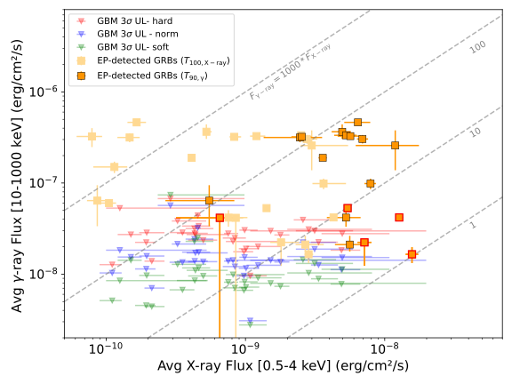
图注：EP事件在伽马射线10—1000 keV与X射线0.5—4 keV能段的平均流量比较。有伽马伴随的事件以方块表示：浅米色的X射线流量按完整X射线持续时间T₁₀₀平均，橙色则按伽马射线T₉₀内的同步观测平均。未触发Fermi/GBM、但由定向搜索恢复的事件带红色边框。未检出事件的GBM同步3σ上限用向下箭头表示，绿、蓝、红分别对应软、普通、硬谱假设。紫色箭头是Zhang等（2025）用GECAM或Insight-HXMT得到的10秒上限，与X射线流量不同步。灰色虚线表示固定的伽马/X射线流量比。
怎么看这张图：先比较同一事件的浅色和橙色方块，时间平均口径本身会移动位置；再比较不同谱假设的上限。箭头不代表测得了伽马流量。 直接呈现同步选择和未检出上限。
来源与置信度：arXiv HTML；source verified；https://arxiv.org/html/2610.28734v1/cfr_avgflux_EP_GBM.svg
图6
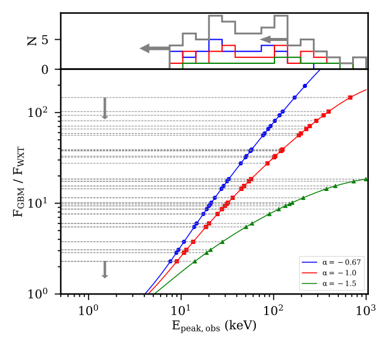
图注：固定高能光子指数β=−2.3的Band谱模型中，GBM（10—1000 keV）与WXT（0.5—4 keV）的流量比随峰值能量变化。低能光子指数α=−0.67、−1、−1.5分别用蓝、红、绿曲线表示。带向下箭头的水平灰色虚线对应没有伽马伴随的EP事件，其实测X射线流量与Fermi/GBM上限给出的比值限制。
怎么看这张图：将某事件的比值上限与不同曲线相交，得到依赖低能谱形的峰值能量范围。这是给定Band谱的映射，不是所有事件都属于伽马暴的证明。 连接观测上限与谱形推断边界。
来源与置信度：arXiv HTML；source verified；https://arxiv.org/html/2610.28734v1/Fluxratios_NOgammaCP_withhist.svg
强相关工作
GBM定向搜索承接Goldstein等2019年的方法论文（原文参考文献明确给出arXiv:1903.12597）。本文的推进在于EP精确位置、更长搜索尺度及与最终WXT时段对齐，而不是发明另一套伽马仪器。检索词可用“GBM targeted search EP simultaneous upper limits”；此关联为本文引用的方法来源，未将参考文献本身冒充本轮完整复核。
谱峰—光度与喷流速度的解释分别依赖Yonetoku等2004、Ghirlanda等2018的经验工作；同步冷却和SSC的基础见原文引用的Rybicki与Lightman教材及相关GRB辐射研究。本文的新内容是将这些模型条件放在EP样本上限前检验，不能反过来把经验关系成立当成已证明。与同日EP260321a双激波突破工作比较，可把“低伽马/X射线比”看成不同起源共享的观测性质，具体身份还需超新星和余辉证据。
同一事件 / 同类源线索：
（未提供）
相似工作：
基础理论 / 方法工作：
（未提供）
相反观点 / 张力线索：
（未提供）
2. Prior volume effect inflates the gravitational-wave background in pulsar timing arrays
- 来源：arXiv / astro-ph.HE
- 链接：https://arxiv.org/abs/2610.28739
- 作者：Biwei Dai, Matias Zaldarriaga, Yacine Ali-Ha\"ımoud
- 公告 / 来源日期：2026-10-22
- 阅读层级：重点精读
- 评分：novelty 8/10，importance 8/10，relevance 8/10，final 9.00/10
- 推荐理由：同一PTA数据的体积拆分、相移控制及多种估计量揭示幅度先验依赖，保持HD相关证据；全文后保留精读。
中文题目：PTA 红噪声先验体积可抬高引力波背景幅度：相关证据与参数估计须分开
做了什么：脉冲星计时阵列（PTA）把每颗脉冲星的到达时间残差分解为本征红噪声和共同引力波背景。问题在于单颗脉冲星的低频功率主要约束二者之和，而标准分析给每颗星的红噪声幅度分别使用很宽的对数均匀先验。作者重分析NANOGrav十五年数据，把共同背景的边缘后验拆成剖面似然与噪声参数体积，发现体积项偏向较大的背景：背景解释了某颗星的大部分功率后，该星的红噪声就可落在许多极低幅度区间，积累较大先验权重。
作者用剖面似然、功率空间先验、总体噪声先验，以及分离自相关与交叉相关幅度的模型交叉检验。固定背景谱指数为13/3时，标准先验给出约2.4乘十的负15次方的幅度，几种替代方法降至约1.5–2.1乘十的负15次方，但区间性质和宽度不同。幅度下降并未削弱背景存在的相关证据；修订先验提高HD相对共同无相关红噪声模型的贝叶斯因子，同时降低若干新物理来源相对双黑洞模型的偏好。它是一项对既有数据推断的条件性修订，不是独立新观测。
为什么重要：纳赫兹背景被用来推断超大质量双黑洞总体，幅度若偏高，会连带推动更高的黑洞质量、更强的并合贡献或额外宇宙学来源。本文把这种张力中的一部分追溯到高维噪声边缘化，指出“发现共同相关信号”与“精确测出其幅度”是不同问题。最值得重视的是可复核的后验分解和多方法对照，而非把某一种替代先验宣布为唯一正确答案；其他数据集与更细的色噪声模型仍需检验。
理论 / 观测 / 仪器方法价值：方法上可借鉴的是同时报告剖面似然、边缘后验和二者的差异，并构造只保留目标识别特征的估计量。这里交叉相关提供HD角相关形状，自相关则提供精确但与本征噪声退化的总功率。随机相移保留自功率而破坏星间相位，能直接检查幅度究竟由哪个信息通道控制。类似思路可用于有大量源级背景参数的多目标联合分析，但不能机械搬用“功率均匀”先验，而要依据实际似然和总体分布。
为什么应该关注：对高能天文的群体搜寻、弥散成分分离和多信使似然，许多对象共享一个信号参数、却各有背景参数的结构很常见。本文提示：增加对象数也可能增加先验体积偏移，未必自动消除系统偏差。需要关注的是把同数据重分析当成方法诊断，跟踪它与色噪声修订、其他PTA结果及双黑洞总体模型的兼容性；不能把本文“新物理贝叶斯因子减小”写成排除所有宇宙学背景。
展开详细解读：文章讲解、背景、理论、重点章节、图表与相关工作
文章详细讲解
科学问题。 标准PTA推断的背景幅度处于不少超大质量双黑洞预测的高端，是否必然意味着天体总体模型遗漏物理？作者提出另一种可能：单星自相关只看到共同背景与本征红噪声叠加，边缘化时采用的独立宽先验会改变共同幅度的权重。这个问题关乎参数推断的可识别性，而不是否认HD角相关所提供的背景存在证据。
作者怎么做。 沿用公开NANOGrav十五年数据及标准建模框架，先在每组共同背景参数下优化所有脉冲星红噪声，得到剖面似然；再积分相对最优值的似然，估计噪声参数允许体积。体积按脉冲星近似分解，但每一步仍使用包含HD相关的完整似然。作者比较总和与MCMC后验、改变红噪声低幅度下界，并将星间共同基底随机相移，测试幅度是否主要受自相关控制。
关键结果。 二维自由谱指数分析中，体积项把边缘后验峰推到最大似然位置之上，作者按其构造的等高线报告超过2σ的偏移。固定谱指数的比较则显示标准幅度约2.4、功率均匀约1.7、分层总体约1.8、经验贝叶斯约1.9、交叉相关约2.1、剖面似然约1.5，单位均为十的负15次方。后两者尤其展示精度代价：交叉通道更干净却更宽，不能只挑其中心值宣称高精度修正。
局限和下一步。 独立红噪声体积的分解在无星间相关模型下精确，在HD模型下靠弱噪声参数相关近似与链检验支持；并非所有PTA条件下的恒等式。白噪声固定、总体分布形状、经验贝叶斯忽略总体估计不确定性、Wilks渐近区间及新物理自由谱重拟合都留下边界。应在其他PTA和更细色噪声模型上重复，报告不同先验与似然诊断，而不是只用较低幅度替换全部已有结论。
关键结果是怎么做出来的
第一环是分开谱与相关。每颗星的红噪声和背景都采用幂律残差功率谱，背景还带HD角相关矩阵。自相关主要约束共同幅度平方加本征幅度平方；交叉相关才识别共同信号的角结构。两种信息在当前数据中的精度不等，因此“有相关证据”并不保证幅度后验已完全摆脱本征噪声先验。
第二环是图1的直接拆分。共同参数固定时，把本征参数优化所得剖面似然与归一化体积相乘，恢复边缘后验。图中似然峰约在对数幅度−14.51、谱指数3.6附近，而体积随背景增加而上升。这里讨论自由谱指数的二维位置；不能与固定13/3时的一维2.4乘十的负15次方直接作同口径百分比比较。
第三环是低幅度下界实验和相移零检验。改变一个远低于实际信号的红噪声先验下界，本来几乎不改变似然，却会移动背景后验，显示是参数空间权重在起作用。破坏星间相位后，标准分析幅度变化很小，而独立交叉相关幅度与零相容。这个对照支持自功率主导幅度的判断，不能解读成原数据没有HD信号。
第四环是逐星体积。附录把后验峰与最大似然点之间的差分拆开：对数似然下降6.7，而对数体积上升12.1。27颗红功率测得好、且与背景同量级的脉冲星贡献约11.0，强本征红噪声的16颗只贡献约0.6，只有上限的24颗贡献约0.5。最好的计时对象反而更容易释放低噪声先验区间，这解释了为何增加高质量对象不必然消除该效应。
第五环是替代方法一致性。功率均匀先验削弱简化模型中的偏置，总体先验让噪声参数共享真实群体的尺度，剖面似然不积分噪声体积，解耦模型只让交叉通道决定目标幅度。几条路径都偏低，比单独替换一个先验更有说服力；但它们使用同一批数据，并不构成四份独立观测证据。
第六环是证据变化。HD/CURN贝叶斯因子从176±7升至263±4或300±6，原因是较低幅度更接近交叉相关偏好的区域。新物理比较则对不少模型从几十降至个位数或小于1；这依赖被比较模型及其先验、也依赖自由谱近似。文中没有用经验贝叶斯先验计算HD/CURN主表，因为该先验从HD模型下估得，会偏向自身；这一控制值得保留。
展开背景、理论、公式、模型和章节导读
背景知识
毫秒脉冲星可作为长期稳定的宇宙时钟，实际分析对象是观测到达时刻减去自转、轨道、天体测量等计时模型后的残差。残差不是纯引力波：仪器、星际传播和脉冲星本身都产生噪声。低频变化尤其容易与共同背景混合，因此PTA探测并不靠单颗脉冲星出现慢波动，而要寻找多颗星之间具有指定角结构的共同变化。
红噪声表示低频功率较大，可以描述自转不规则等低频过程；“本征”在本文是模型中的源级成分，不意味着每一份噪声都已确定物理机制。HD曲线则是各向同性张量引力波背景对不同天区方向计时残差相关的预言。共同无相关红噪声模型也能解释类似的单星功率谱，却不包含这一星间结构，因此是检验相关证据的重要对照。
贝叶斯边缘化会对所有允许的噪声参数取先验加权平均。一个共同参数值即使不提供最高似然，也可能因为允许较多噪声组合而得到较高后验。剖面似然则在每个共同参数下只取最好的噪声组合，回答另一类统计问题。二者不应一般地相同；差异本身不证明贝叶斯方法错误，关键是先验是否合理描述了真实噪声群体。
对数均匀意味着每一个十倍幅度区间得到相同权重，它不是参数化无关的“没有知识”。把幅度换成功率后，该先验会偏向极低功率。若共同背景已解释总红功率，本征噪声可以占据许多很低幅度的十倍区间；若背景弱，本征噪声则必须挤在测量要求的窄范围。这就是本文物理退化与统计体积相结合的图像。
基础理论 / 方法脉络
先从协方差看信息归属。总协方差的对角块包含每颗星的背景、本征红噪声与白噪声，非对角块包含HD交叉功率。若非对角信号较弱，数据可精确限定单星总红功率，却对如何拆分两部分约束较弱。于是同一条高似然脊可由多种背景—本征组合构成，先验在沿脊方向的权重就特别重要。
把共同幅度和谱指数固定后，噪声参数的最佳值定义剖面似然；用完整似然除以这个最佳值再积分，得到有效体积。这个体积不仅是几何宽度，还包括似然形状与先验密度。因此原文不用高斯Laplace近似，而逐星做二维数值积分，以处理弱约束噪声的偏斜和长平台。HD相关仍保留在似然里，不能把逐星体积分解误读为删去引力波相关。
简化模型将每个过程压成一个功率，并令测得总功率近似固定。于是噪声功率等于总功率减背景功率，边缘化变成沿这条脊读取先验密度。幅度对数均匀变成功率密度与功率倒数成正比，背景越接近总功率，剩余噪声越小，权重越大；功率均匀则没有这种倾斜。该推导只解释机制，不替代真实多频率数据的完整计算。
解耦模型允许自相关与交叉相关幅度分别变化，从而减少自功率体积对交叉估计的牵引，但协方差仍须正定。它估计HD相关模板的幅度，不要求每个带噪估计值都能写成非负CURN加非负GWB的物理分解。额外强加后者会重新把自功率边界带入交叉估计，原文因此只采用正定约束，并在补充材料报告边界影响。
公式与推导
从论文式1的残差功率谱开始：
A为无量纲幅度，P具有时间立方量纲；它是计时残差谱，不能与应变谱直接混用。圆轨道、由引力波驱动的双黑洞总体对应残差谱指数13/3，但环境作用可改变真实谱形。
记共同参数为θ、每颗星的噪声参数合集为φ，标准边缘后验是
定义每个θ下的最佳噪声参数及剖面似然：
在积分内乘除剖面似然，就得到论文式3–4的精确分解：
这里C不依赖θ。只有后续逐星体积分解使用近似；这一步代数恒等式本身无需高斯假设。
为了看清方向，采用论文的单功率教学极限：
它要求交叉通道比自通道弱；强信号阵列不能无条件沿用。若幅度先验与A的p次方成正比，令x=A²并计入雅可比，得到
当总功率被数据钉住，噪声积分主要采样x等于总功率减背景功率，于是
有效区间还受非负功率和有限先验边界限制。对数均匀p=−1给每颗星一个倒数因子，乘起来倾向较高背景；功率均匀p=1则消掉这项倾斜。有限误差会平滑形式上的边缘行为，原文附录式16给出含低幅度截止的分段对数表达，真实后验并不无限发散。
把识别信号的交叉部分独立出来，论文式10写成
S描述共同谱形，δ为Kronecker符号；该式表示所建模的共同成分，完整数据协方差还含其他噪声。分离后交叉幅度的误差会变大，正定性仍需核验。最后，剖面区间用
构造；在论文采用的一维Wilks渐近条件下，90%置信区间阈值为2.706。它与贝叶斯90%可信区间是不同构造，有限样本、边界和噪声失配下不能仅靠此式保证覆盖率。
模型拟合 / 应用方法
真实数据部分沿用标准公开数据框架，以enterprise相关工具构造似然、PTMCMCSampler采样，链长五百万步，白噪声固定于最大后验值。共同背景和单星红噪声均采用幂律；论文比较改变红噪声先验的影响，不能说已经同时解决了所有色噪声、非平稳过程和计时模型误差。不同先验下仍有同一数据与模型家族的共同依赖。
剖面优化先用192个点的差分演化，再用L-BFGS-B细化；邻近网格热启动并重新检查落后于邻居的点，全局最大值用5个独立种子确认。逐星二维体积积分检查数值收敛，不采用局部高斯近似。这些步骤降低数值优化假峰风险，但不能把计算收敛等同于真实噪声模型正确。
分层模型把单星对数幅度及谱指数视为二维高斯总体抽样，并同时推断总体参数；经验贝叶斯则用50乘50网格直方图、平滑和100轮EM从标准链重要性重加权估计总体密度。后者可表达多峰，却把估得密度固定下来，遗漏总体估计不确定性。其无限对象数一致性论证依赖可识别性、独立性和弱相关展开，不能保证67颗星的有限样本没有偏差。
HD/CURN证据通过联合模型索引采样估计，误差来自有效样本数。新物理比较采用因子化自由谱重拟合；表中几十降至个位数表示相对证据受先验影响，不是对应某个发现显著性的直接σ转换。外部PPTA区间和双黑洞总体预测还经过高斯或对数正态转换到90%口径，比较图的误差条不能当成原始完全同构的测量。
解耦模型固定两条谱指数为13/3，避免频率相关正定边界额外耦合自功率。67星阵列所用交叉矩阵最小特征值约−0.4995；原文报告约30%后验落在交叉功率大于自功率的区域，并测试更严格物理分解边界仅使结果略移。此诊断说明估计量和物理成分参数不是同一概念，使用者复现时应保留边界定义，而不是自行截断负或不合直觉区域。
重点章节 / 结果段落怎么读
- 先读第二节式1–4，明确残差功率谱、共同参数与噪声参数，理解后验分解中哪一步是恒等式。
- 读图1及第二节后半，沿“背景增大—本征噪声可占更多低幅度区间—体积增长”逐步解释，而不是只记住偏移超过2σ。
- 读图2的先验下界和随机相移零检验：辨认哪些结果来自自功率，哪些确实需要星间相位。
- 读第三节表1、表2，分别回答HD是否被支持、背景幅度多大和来源模型谁更优三个不同问题。
- 最后核读补充SIII的优化、EM、置信区间与正定边界，判断实际复现的假设是否与图中结论一致。
关键图表与解读
图1
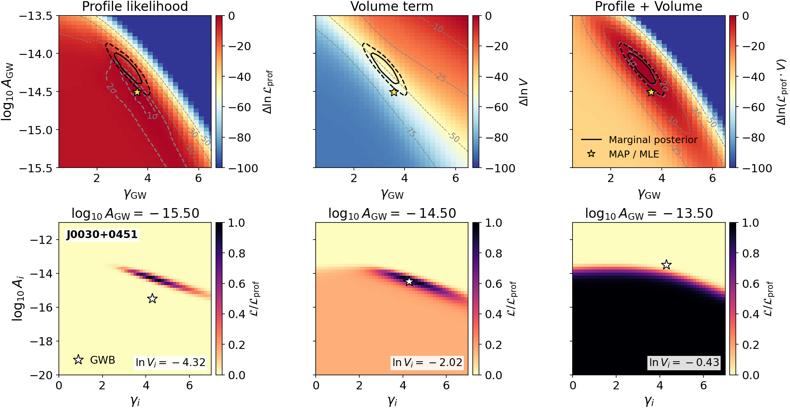
图注：上排：把NANOGrav十五年数据的Hellings–Downs相关模型边缘后验分解为剖面似然（左）、体积项（中）及二者之和（右），各图均按自身最大值归一。左图灰色1σ、2σ轮廓表示剖面似然约束。随引力波背景增大，体积项单调增大，使边缘后验的黑色轮廓相对最大后验/最大似然点（星号）上移超过2σ。下排：在星号标示的三个背景水平下，展示脉冲星J0030+0451红噪声参数空间中式6的体积被积函数，即相应似然与剖面似然之比。允许的红噪声空间随背景增大而扩大，说明体积项为何偏好更强背景。
怎么看这张图：左图看数据最优点，中图看有多少噪声参数组合与之兼容；积分后验同时受到两者影响。偏移不等于HD相关消失。 揭示噪声先验体积影响的直接证据。
来源与置信度：arXiv HTML；source verified；https://arxiv.org/html/2610.28739v1/figures/hd_decomposition_screening.png
图2
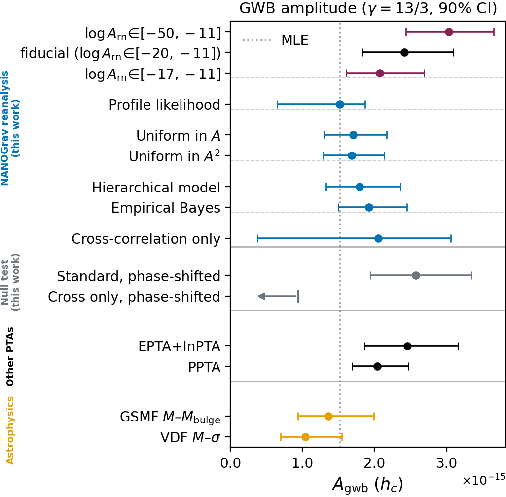
图注：固定引力波谱指数γ=13/3时的背景幅度约束，以90%贝叶斯可信区间或频率学置信区间表示。最上三行采用不同下限的标准红噪声对数均匀先验；下限改变先验体积并移动背景约束，基准行是NANOGrav官方选取。蓝色的缓解方法均给出较低幅度，与橙色星系标度关系预言相容。灰色零检验先移除脉冲星间相关，再重复标准与仅互相关分析；标准幅度几乎不变，仅互相关幅度与零相容，并以95%上限表示。EPTA+InPTA及PPTA结果采用标准对数均匀先验。
怎么看这张图：不同统计区间的含义不可混同；尤其灰色互相关结果是95%上限，其余大部分为90%区间。背景幅度修正与相关证据强弱要分别看。 展示各缓解方法及零检验。
来源与置信度：arXiv HTML；source verified；https://arxiv.org/html/2610.28739v1/figures/fixgamma_logA_comparison_singlecol_ps.png
强相关工作
本轮分析明确承接NANOGrav十五年背景证据论文arXiv:2306.16213、噪声预算2306.16218和方法2306.16223；这些均由本文参考文献提供可核对链接。本文与原分析共享计时数据，新增的是先验体积拆解和估计策略，因此属于对同一证据的再解释，而不是另一次独立背景探测。Hellings与Downs的1983年角相关结果提供区分共同信号与独立噪声的基础，本文保留这一结构。
作者将结果与Goncharov等的总体噪声研究（arXiv:2409.03627）及新近色噪声重分析（2606.28554）区分：前者在另一PTA数据集上自由谱参数移动，但固定谱指数幅度没有同样变化；后者通过改进噪声物理降低幅度，机制不同。这些差异应作为后续验证问题，不能宣布所有PTA都已得到同样修正。相关引用在本轮用作论文自身的比较脉络，不冒充已经完整重跑或阅读全文复核的独立成果。
同一事件 / 同类源线索：
相似工作：
基础理论 / 方法工作：
相反观点 / 张力线索：
（未提供）
3. PSR J0653+0443: An Eclipsing Millisecond Pulsar in an Extremely Eccentric Double Neutron Star System
- 来源：arXiv / astro-ph.HE
- 链接：https://arxiv.org/abs/2610.29838
- 作者：Z. L. Yang, J. L. Han, L. G. Hou, Z. W. Chen, Y. G. Gong, Y. L. Guo, Y. J. Lu, C. Zhang
- 公告 / 来源日期：2026-10-22
- 阅读层级：重点精读
- 评分：novelty 8/10，importance 8/10，relevance 8/10，final 9.00/10
- 推荐理由：极高偏心双中子星及短时近星点时延提供罕见演化检验，需核实计时模型、伴星质量和探测概率假设。
中文题目：FAST 发现极高偏心双中子星 PSR J0653+0443：短暂食与近星点计时放大相对论效应
做了什么：作者报告一个47.5毫秒脉冲星及其中子星伴星组成的银河场双星，轨道周期约79.084天，偏心率达到0.99238692。漫长周期并不代表近星点相互作用弱：两星最小间距约0.83个太阳半径，在真近点角−90度至+90度之间仅运行46分钟。FAST两年多计时资料、特别是2025年2月19日覆盖近星点的两小时观测，给出342个到达时刻，并看到约85秒的射电脉冲食。
论文用适合高偏心轨道的新参数组合降低计时退化，分开长期近星点进动与轨道相位相关的短时调制，在广义相对论模型下得到约1.38和1.44个太阳质量的两星。非相对论进动附加项在95%区间内仍与零相容；45毫秒的Einstein延迟是模型推算值，尚不能独立测量。双星演化计算提示这种轨道在采用的出生踢速度与共同包层方案下很罕见，但这不是完整巡天选择函数下的发现概率。引力波高谐波信号也是预测，目前未被直接检出。
为什么重要：这个系统把很长的轨道周期与非常短的强相互作用阶段结合起来，使近星点进动在单个轨道内的变化产生毫秒级计时结构，比常见双中子星更容易显现。它同时为双星第二次超新星如何留下高偏心而仍束缚的系统提供新约束。价值在于新增一类极端几何和计时实验条件；不能因为轨道稀有就把单一演化通道或新引力效应视为已经证明。
理论 / 观测 / 仪器方法价值：可迁移的方法是选择与数据敏感方向更一致的参数化，并把观测资源集中到信息密度最大的相位。传统半长轴、近星点角和偏心率几乎完全相关，转换到两个投影组合及根号下一减偏心率平方后，相关系数显著降低。近星点的密集TOA对偏心率及进动相位调制最敏感，远星点长基线又约束其他项；这比简单增加均匀采样更有效，但也要求检查覆盖缺口和模型误差。
为什么应该关注：高能与多信使研究可把它视为有明确轨道结构的强引力源和极端双星演化检验点，不能直接预设有伽马或中微子调制。其预测引力波功率集中到远高于轨道基频的谐波，说明长周期天体仍可能在近星点产生短时信号；然而论文的十年灵敏度比较认为LISA、太极和天琴不足以探测，潜在可测性对应更远期概念。后续应关注下一次近星点覆盖、重复食、距离及自行测量，而非把长期合并预测当近期告警。
展开详细解读：文章讲解、背景、理论、重点章节、图表与相关工作
文章详细讲解
科学问题。 双中子星轨道保存第二次超新星的质量抛射与出生踢信息，而脉冲到达时刻可同时探测轨道几何和相对论时延。此前许多系统偏心率中等，此次接近抛物线的束缚轨道允许直接放大单轨道内进动速率的变化。核心问题是这个轨道是否由可靠的相位连接计时支持，以及观测能将质量、几何和附加进动分开到何种程度。
作者怎么做。 初始七次FAST观测的表观自转周期变化用于四维轨道搜索，随后安排近星点附近跟踪，形成跨越两年多的相位连接解。作者从偏振校准、射频干扰处理、分频估计色散量和模板匹配提取TOA，再修改TEMPO2的DD/DDGR参数化。2025年2月19日的长跟踪用30秒积分计时，并以5秒积分显示食；这些时间分辨率分别服务轨道拟合和短时遮蔽识别。
关键结果。 偏心率和周期由计时给出；85秒食出现在脉冲星位于伴星之后的合相附近，支持视线穿过伴星有效磁层的解释。相位相关近星点进动导致约−2.91至+2.49毫秒调制，结合Shapiro延迟和模型假设约束质量。计时给出的倾角约76度、68.3%区间61至84度，因此“近侧视”不等于精确90度；较大伴星磁层仍可在偏离完全侧视时产生食。
局限和下一步。 伴星射电脉冲未检出，不能由食直接测出其自转；磁层大小、倾角和伴星周期存在退化。Einstein延迟与轨道投影项高度相关，附加进动也没有95%层面的非零证据。演化与引力波预测依赖出生踢、共同包层、距离及探测器概念。后续更长基线和重复近星点观测可检验时延模型、食稳定性与伴星磁层；独立距离和自行会改进引力波幅度与运动学修正。
关键结果是怎么做出来的
先看发现与相位连接：2022年11月首次发现，2023年1月确认，2024年6月连续近星点邻近观测使跨历元计时锁定。论文列出观测日期、持续时间及覆盖的平均近点角和真近点角；同样几分钟在不同轨道相位携带的信息差别很大。342个TOA分布在MJD59902至60804，不能把单次两小时观测说成全部参数的唯一来源。
再看数值退化的控制。传统参数的相关系数中，半长轴与近星点角约−0.99960，另两对也约为±0.98665；变换后的对应相关系数约0.120、0.285和−0.001。它们说明拟合条件改善，不意味着所有物理参数彼此独立。作者再将新参数转回通常的轨道量及传播误差，才得到高精度偏心率与投影半长轴。
第三环是食与质量的互证。质量函数约0.33966个太阳质量，结合总质量约2.814个太阳质量给伴星最低质量约1.38，支持中子星解释。合相短时食进一步提示伴星磁层遮蔽；但单独食长只能约束磁层尺度与倾角组合。论文在采用磁层不超过光柱范围的条件下给伴星周期下界约0.86秒，而不是测得一个0.86秒脉冲星。
第四环是相对论调制。长期进动率约0.017791度每年，极高偏心使真近点角在近星点急变，短时进动不能简单用时间线性项替代。把相位相关项与均匀的附加进动区分后，得到附加项约负1.5乘十的负4次方度每年，误差约0.8至0.9乘十的负4次方。论文明确其95%范围包括零；这里不能写成发现了非GR进动。
第五环是演化罕见性。示例MESA模型从1.4太阳质量中子星、2.6太阳质量氦星及一天轨道开始，经历Case BB质量转移；第二次爆炸和踢速度再产生长而极偏心的轨道。总体模型在较宽窗口偏心率大于0.95、周期50至110天给出不到0.5%的比例，而更窄窗口小于约二点五乘十的负5次方。两者窗口不同，不能择最小概率而不说明定义，也不能用比例直接替代真实射电巡天探测概率。
最后是多信使外推。用测得轨道与约1 kpc的示例距离计算，功率峰约0.357 mHz，对应约2440倍轨道频率；周期性近星点波包不等于已经观测到的引力波暴。Peters轨道衰减积分给约2.54 Gyr合并时间。DM距离模型分别给约0.2与1.3 kpc，说明波幅还有显著距离不确定性；论文十年远期探测器预测必须连同这一假设一起引用。
展开背景、理论、公式、模型和章节导读
背景知识
双中子星通常经历两次超新星。第一颗中子星可从伴星转移的物质获得角动量而被再循环，自转变快；第二次爆炸既丢失质量，又可能给新生中子星速度踢。系统是否仍束缚、轨道是否拉长以及偏心率多大，取决于质量与速度矢量的共同变化。高偏心并不单独测出踢速度，必须结合爆炸前轨道和演化假设。
椭圆运动中，平均近点角匀速增加，真近点角描述从焦点看去的实际方向，近星点会快速变化。偏心率接近1时，天体在远星点附近停留大部分时间，却在短时间内掠过近星点。因此79天周期和46分钟扫过半个真近点角范围并不矛盾，它反映面积定律而非异常运动。
计时中的Römer延迟来自轨道位置改变光程，Shapiro延迟来自信号通过伴星引力场，Einstein延迟来自引力红移与运动钟速差。三者都出现在到达时刻，却有不同相位函数。能否分开不仅取决于时延幅度，还取决于采样覆盖、相位函数是否相似和观测基线；大幅度也可能因退化而暂时测不出来。
偏心双星引力波不只集中在圆轨道的二倍轨道频率。近星点短时加速会把功率分配到大量高次谐波，使波形看起来像周期性波包。轨道基频和辐射功率峰必须分开描述；信号进入某台探测器频段也不意味着信噪比足够。还须比较实际距离、观测时长和完整噪声曲线。
基础理论 / 方法脉络
从轨道周期和总质量用开普勒关系求相对半长轴，再乘一减偏心率得到近星点间距。大半长轴并不能保证所有相位都相距远：本系统相对半长轴约254光秒，但一减偏心率只有约0.0076，所以近星点仍非常紧凑。这个数量级解释了强加速和短暂食为什么会出现在长周期系统中。
脉冲计时实际测到的是投影光行时间。为避免原文将长度形式的x与表格光秒数混写，以下统一定义x为投影半长轴除以光速，单位秒；代入Römer延迟时不再额外除一次光速。质量函数则必须使用长度cx。这一单位统一不会改变观测结果，却能避免从表格数值直接代公式造成数量级错误。
在高偏心极限，传统参数沿相似方向改变Römer时延，产生很强协方差。作者选取两个投影组合，让主导的余弦与正弦系数更直接对应数据；再用根号下一减偏心率平方处理偏心极限。该变换改进数值可识别性，但不会创造新信息，也不能解除Einstein延迟与正弦投影项本来的物理退化。
近星点进动的GR部分与真近点角相联系，非相对论或几何贡献可近似表现为长期均匀项。二者差异在真近点角偏离平均近点角最明显时被放大。短时轨道调制提供总质量信息，而长期趋势测总进动；将两者相减才约束附加项。用GR关系推导质量时，应称为在该理论模型下的质量估计，不能把同一关系再重复算作完全独立的GR检验。
公式与推导
以下沿原文式1–7及方法S4、S6连接轨道、计时与辐射，并统一x为光行时间秒，质量在采用太阳时间常数时以太阳质量为单位。先由开普勒方程确定位置：
M、u、θ分别为平均、偏近点角和真近点角，计算时须连续展开角度，不能在跨越分支时产生伪跳跃。相对半长轴a和近星点距离为
此式使用有质量单位的mp和mc；它解释长周期与短近星点间距同时成立的几何原因。
投影光程时延写成
为了减少高偏心协方差，按原文定义的相同组合但使用时间单位，令
代入即可得到
这一步是代数重参数化。Einstein项也正比于sin u，因而其系数γ与z2在短基线下退化；不是只要预测γ很大就一定能单独测出。
由投影轨道可得质量函数：
它只限定质量与倾角组合。进一步采用GR并定义太阳时间常数T⊙=GM⊙/c³，得到
这一行mp、mc为太阳质量数值，输出为弧度每单位时间，需要转换到度每年。原文在Einstein延迟附近把T⊙的定义上标误写为2/3，此处按量纲采用标准T⊙定义。
将GR随真近点角变化的进动与均匀附加进动分开，原文式15对应
对Römer延迟作一阶展开，短时残差为
偏心率大时θ与M差异急剧变化，产生可见调制；导数的单位是秒每弧度，整体仍为秒。附加项的后验包含零，就不能由该式宣称出现新力。
最后看相同轨道如何改变引力波功率。Peters平均辐射含偏心增强因子：
这里恢复有质量单位的mp、mc。因子随e接近1而急升，功率集中在近星点；合并时间需要同时积分a和e的衰减，不能直接把当前能量除当前光度当全程寿命。本文以Peters演化积分得到约2.54 Gyr，仍属模型预测而非已测轨道衰减。
模型拟合 / 应用方法
数据链包括1.0–1.5 GHz接收、偏振校准、自动干扰剔除、色散校正和模板匹配TOA。作者迭代折叠与计时解以保持相位连接，近星点使用更短子积分。极大加速度和相位快速变化使时间分辨率成为实际误差控制的一部分；不同日期的信噪和相位覆盖不能简单视为等权独立测量。
DD类模型先允许后开普勒参数较自由地拟合，DDGR类则用GR质量关系联结参数。新DDe组合改善高偏心数值条件，带“+”版本进一步允许长期与相位相关进动分开。主表质量来自DDeGR+和网格贝叶斯分析；更自由的DDe+给出的伴星质量误差显著更大，说明精度来自数据与理论关系共同约束。
贝叶斯网格采用总质量和cos i的均匀先验，并要求脉冲星质量大于1个太阳质量；将χ²缩放到最小值等于自由度，然后按指数负Δχ²除2构造后验。质量和倾角区间由边缘累计分布得到，图中的Δχ²=1、4、9曲线不能自动当作二维联合68%、95%、99.7%区域。本文解读引用边缘区间，并保留该误差缩放与先验口径。
演化示例固定初始质量、金属丰度、混合及吸积处方，不是从观测唯一反演的历史。总体合成又采用共同包层效率3、恒定银河恒星形成率、指定金属丰度，以及不同超新星通道的Maxwell踢分布。将铁核塌缩踢速度离散提高到500 km/s时，宽窗口比例会升到约2%，直接说明罕见程度依赖模型输入，尚不足以单例定量否定全部双星演化理论。
引力波曲线采用约1 kpc距离和十年观测，并比较多种未来设计。原文预测LISA、太极、天琴信号低于噪声，而Folkner与LISAmax概念约有5.1和8.4的信噪；这是设计条件下的预期，不能作为任务承诺。表中DM距离模型相差较大，未知距离、轨道取向和噪声曲线变化都会影响可测性，应在未来有新数据时重新计算。
重点章节 / 结果段落怎么读
- 主文表1与方法S1先确定时间跨度、342个TOA、单位和参数是拟合还是推导，尤其标出45毫秒Einstein延迟未独立测得。
- 看图2及S3的食几何，区分85秒观测事实与伴星自转、磁层大小的条件性推断，不把“近侧视”简化成90度。
- 方法S4与表S4对比传统参数和新参数的相关系数，理解重参数化解决数值病态而不是增加信息。
- 图3与方法S5读取短时进动和附加项的统计范围，注意95%仍含零以及质量对GR关系的依赖。
- 最后读S6.3–S6.4，分别检查总体比例的窗口和出生踢假设、引力波距离及十年灵敏度，避免把预测写成观测。
关键图表与解读
图2
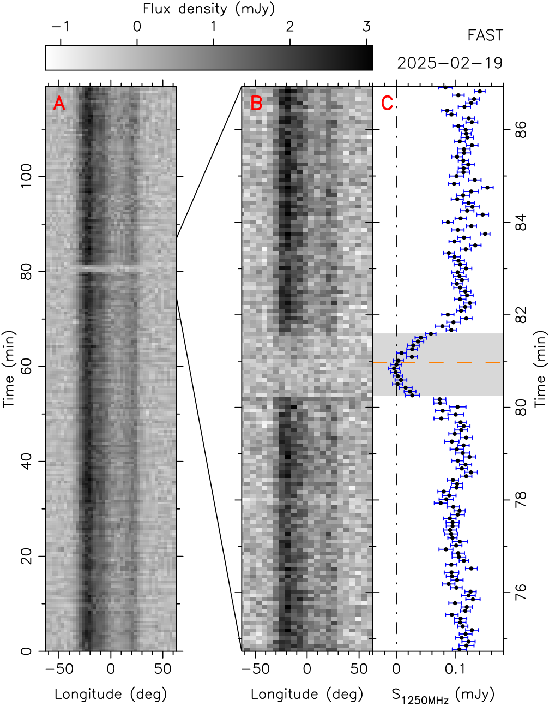
图注：近星点附近掩食的时间—脉冲相位图。FAST于2025年2月19日观测到85秒掩食，发生在θ+ω=90°的合相附近，橙色虚线标出该位置。A图使用128个相位箱、30秒子积分的脉冲轮廓；B图放大掩食区域，采用64个相位箱和5秒子积分。C图的流量密度及误差由PSRCHIVE的psrflux程序将观测轮廓与标准模板比较得到。
怎么看这张图：看短时间脉冲消失是否与合相一致，再联系轨道尺寸估计遮挡范围。未探测到伴星脉冲，不能从本图直接测出伴星自转周期。 掩食是约束伴星磁层的观测基础。
来源与置信度：arXiv HTML；source verified；https://arxiv.org/html/2610.29838v1/time-phase.png
图3

图注：PSR J0653+0443的计时残差和引力波应变。A、B图是在拟合表1参数后，残差分别随修正儒略日和以真近点角θ表示的轨道相位变化，B图覆盖两个轨道周期。θ=90°−ω=46°附近的85秒掩食以橙色虚线表示，此时脉冲星位于伴星后方；图中标注到达时刻残差的加权均方根。C图展示Shapiro延迟引起的残差项，D图展示依赖轨道相位的近星点进动项；红线由表1最佳拟合参数理论计算，误差棒为到达时刻的1σ误差。E图按距离1.0千秒差距计算该双中子星系统的正交两种引力波偏振应变h₊、h×。
怎么看这张图：C、D分别隔离传播延迟和轨道动力学贡献；E是据轨道推算的波形，不是引力波探测数据。 连接计时测量、相对论效应与引力波预言。
来源与置信度：arXiv HTML；source verified；https://arxiv.org/html/2610.29838v1/timing_result.svg
强相关工作
脉冲星计时方法承接Blandford与Teukolsky、Damour与Deruelle的轨道时延框架，本文的主要方法增量是针对高偏心参数退化及短时进动分解。双脉冲星PSR J0737−3039A/B提供已有磁层食和精密计时的比较对象；相似的食光变支持磁层遮蔽的解释路径，但本源没有检出伴星脉冲，不能复制双脉冲星全部磁层诊断。这里的关联来自本文主文与方法引用。
双星形成解释依赖Tauris等的中子星—氦星、Case BB转移与第二次爆炸框架；引力波衰减沿用Peters轨道平均辐射理论。本文把一个新观测系统放入这些已有模型，发现其轨道处于罕见区域，推动对出生踢和共同包层处方的检查。它既没有直接测到第二次超新星的踢速度，也没有直接检出周期引力波；把模型可行史、统计罕见性和观测事实分层，是与既有工作的正确连接方式。
同一事件 / 同类源线索：
（未提供）
相似工作：
基础理论 / 方法工作：
相反观点 / 张力线索：
（未提供）
4. The renormalization-group running of neutrino mixing is undetectable
- 来源：arXiv / astro-ph.HE
- 链接：https://arxiv.org/abs/2610.28744
- 作者：Gabriela Barenboim, Mauricio Bustamante, Qinrui Liu
- 公告 / 来源日期：2026-10-22
- 阅读层级：重点精读
- 评分：novelty 8/10，importance 8/10，relevance 8/10，final 9.00/10
- 推荐理由：指出用产生探测动量替代质量壳混合的概念错误，波函数自能抵消RG运行，影响高能中微子味解释，需核验完整场论论证。
中文题目：中微子混合的重整化群跑动为何不能被当成高能味比例信号
做了什么：高能中微子的味比例能否直接测量混合角随能标的“跑动”？作者检查了把产生与探测顶点分别写成不同混合矩阵的一类模型，指出宏观传播的中微子接近质量壳，决定其物理混合的是自身传播子的极点及自能；探测动量转移并不流经这部分自能。若选择重整化尺度等于探测动量转移，就必须同时保留外腿上的对数修正，它们抵消拉格朗日量混合参数的跑动。
论文用大双希格斯真空期望值比的最小超对称标准模型、GeV质量重中性轻子、轻标量跷跷板和标准模型有效场论四类例子说明这一点，并将错误前提产生的零距离味跃迁与短基线数据比较。这是对一类信号解释的理论修正，包含对作者自身旧工作的修正；不是对所有中微子新物理或能量相关味变化的排除。
为什么重要：高能味比例常被当作从实验室走向极高能标的窗口，但“能量更高”不自动意味着测到了另一套真空混合角。本文把拉格朗日量参数、物理质量本征态和散射顶点修正分开，直接影响IceCube等实验对异常味组成的解释。结论的力量来自振幅和重整化的一致性，而不是新的天体中微子样本；它需要作为作者提出的具体理论审查来理解，不能改写为实验已测得所有修正为零。
理论 / 观测 / 仪器方法价值：可借鉴的是先追踪每个动量在费曼图中经过哪一条线，再选择尺度并完成匹配的方法。对任何“混合随探测能标变化”的模型，都应同时写出传播子自能、外态归一化、顶点及箱图，而不能只求解混合角的重整化群方程。若确有新产生或探测相互作用，应拟合通常非幺正的振幅修正，并与轻子味普适性、非标准相互作用和短基线数据联合检验。
为什么应该关注：对天体中微子研究，本文明确保留了源端从完整π介子衰变到缪子阻尼的变化、传播中的衰变与新相互作用，以及探测端新算符。今后若味组成偏离标准区域，应比较这些机制及其能量、方向和截面依赖，而不是把偏离直接归为重整化群跑动。尤其要区分PeV中微子能量与深度非弹性散射常见的电弱尺度动量转移，两者相差很大。
展开详细解读：文章讲解、背景、理论、重点章节、图表与相关工作
文章详细讲解
科学问题：混合矩阵把伴随电子、缪子、τ轻子产生的味态与传播的质量本征态联系起来。一些研究在产生处使用某个低尺度矩阵，在探测处使用随重整化尺度跑动后的矩阵，从而预言即使传播距离为零也出现味改变，或高能天体中微子具有异常味比例。作者追问的不是这些参数会不会在数学上跑动，而是两个矩阵是否真能出现在同一个物理振幅中。
作者怎么做：先从含一圈自能的中微子二次作用量出发，把动能项正规化，再对有效质量矩阵作Takagi分解。由于传播跨越宏观距离，中间态被传播子的质量极点控制，自能取在中微子的在壳四动量处。接着把修正分为中微子外腿、带电轻子外腿、W传播子、顶点与箱图，检查哪些部分同时依赖味和动量转移。这样能定位增强混合角变化的质量简并因子，而不是凭“高能探测能分辨重粒子”的直觉判断。
关键结果：接近简并的中微子质量可以放大自能对本征矢的旋转，但这种旋转已经包含在唯一的物理混合矩阵中，不随产生或探测过程改变。真正依赖动量转移的顶点和箱图不带相同的逆质量差增强。轻标量模型中，若连同Dirac质量一起一致地跑动，原先报告的混合跑动甚至在拉格朗日量参数层面就抵消。重中性轻子例子的假想零距离跃迁还超过现有短基线限值，提供独立于主理论论证的诊断。
局限和下一步：正文主要在一圈、微扰耦合、宏观在壳传播和环内质量远大于轻中微子质量的条件下展开；不是任意强耦合或任意介质问题的完整计算。所列实验约束有各自的运动学和参数假设，尤其单参数变化限值不能直接替代多参数联合拟合。下一步应把曾用两套幺正矩阵描述的信号重新写为一致的产生、传播和探测振幅，保留可能存在的非幺正新相互作用，并检查真实探测响应。
关键结果是怎么做出来的
第一步是识别尺度。重整化尺度只是分配显式环修正与重整化参数的记账选择；探测动量转移是过程的洛伦兹不变量；中微子能量则随参考系改变。高能中微子仍满足自身四动量平方等于极小质量平方。表2和图2把这些量放在不同位置，因此“PeV粒子”不足以推出其自能在PeV虚度处计算。
第二步是构造可观测的混合。动能自能经场重定义进入有效质量矩阵，与质量型自能一起修正本征值和本征矢。矩阵对重整化尺度的总导数为零，意味着裸看跑动质量矩阵产生的旋转，被显式自能的对数项抵消。简并增强恰恰发生在外腿自能接到另一质量态传播子的地方；顶点内部远离在壳的传播子没有这个小分母。
第三步是数值反例。MSSM示例把最轻质量取为旧文使用的0.43 eV时，错误处方产生很大的太阳混合角变化，但该质量本身已与文中引用的宇宙学约束不相容。改用0.01 eV，跑动幅度减小，并不挽救其可观测解释。重中性轻子例子中，3 GeV、缪子混合平方为$4\times10^{-8}$的基准给出约3.16 meV质量修正；它改变物理混合一次，不会在探测动量越过3 GeV时开关。
第四步是检查轻标量模型的内部一致性。作者复现旧模型1的一条数值曲线，再将同组参数用于模型2比较。只跑动Majorana质量、固定Dirac质量会改变跷跷板各项的相对权重；让两者都随无菌场归一化变化后，这些味依赖项逐项抵消。这个检查比只比较最终味三角更能定位差异来自哪里，但不等于对所有轻标量模型的全面排除。
第五步是数据交叉诊断。在假定的两矩阵处方下，NuTeV和NOMAD的90%置信上限分别给出缪子到电子及τ的零距离跃迁限制。一次只变一个参数时，三个角度变化被限制在约0.7至2.4度以内；同时改变多个角可部分补偿。重中性轻子基准的总出现概率具有对任意列相位都成立的下界，约1.1%至5.0%，远高于两项实验上限之和约0.096%。这是对错误处方的条件检验，不是对真实RG跑动的实验测量。
最后回到天体中微子。图7把固定物理混合下的标准区域与错误处方的偏移并列；后者最多改变某些味份额约0.085或0.094，但作者论证这些偏移不会由所述跑动产生。当前味数据尚不能检验所有这种小偏移，也不能被写成支持理论抵消的实测证据。理论一致性与实验精度是两条不同的证据线。
展开背景、理论、公式、模型和章节导读
背景知识
中微子味态由伴随产生或探测的带电轻子命名，质量态则决定自由传播的相位。两者不重合产生振荡。远处天体发出的中微子跨越宇宙学距离后，各质量态相位通常平均，味比例仍保留源端组成和混合矩阵模平方的信息，所以高能中微子可以检验传播和相互作用。
重整化群描述同一理论在不同记账尺度下如何重新分配参数和环修正。高尺度味对称性或跷跷板模型给出的质量矩阵不能直接与低能测量比较，必须跑动并在重粒子阈值处匹配。这个标准用途完全保留。争议是把数学上的尺度变化额外解释成同一物理中微子在不同实验中拥有不同的真空混合。
混合角可能比质量修正本身变化更大，因为接近简并的矩阵本征矢对微小非对角扰动很敏感。类似量子力学微扰论，转角含修正除以本征值差。这个增强解释了为何某些模型的跑动曲线看起来剧烈，却不保证它能变成探测能量依赖：必须先判断这项修正属于外态还是相互作用点。
过去关于天体味比例的预测还常混用能量和动量转移。在深度非弹性散射中，两者受运动学关系连接，但W传播子会压低很大的转移；中微子能量超过约3 TeV后，典型转移仍常在W质量附近。另一方面，介质势可以使传播哈密顿量的有效本征态随能量改变，这是真实机制，不能与本文批评的真空混合跑动混为一谈。
基础理论 / 方法脉络
自由传播首先由两点函数决定。把自能写成动能型和质量型两部分，动能系数不再是单位矩阵，就要先作非幺正的场归一化，再求质量本征态。直接对未正规化动能情况下的质量矩阵求本征矢，会把参数化选择误认为物理混合。对Majorana质量矩阵用Takagi分解而非一般厄米矩阵的对角化，才能得到非负质量和一致相位。
在宏观基线极限，中间传播子的极点主导振幅，远离质量壳的贡献迅速衰减。因此中微子外腿的自能只看到自身在壳虚度和环粒子质量。W携带的动量转移进入另一部分图。把一个过程的硬尺度用于所有环积分，忽略它们实际经过的线路，是本文指出的关键逻辑跳跃。
振幅中还存在味普适修正、味依赖顶点修正和剩余的厄米外腿修正。味普适项在按通量与截面正规化的跃迁概率中消去；对角的整体味归一化也会消去。非对角项才改变概率，有限基线一般在线性阶出现，零距离出现概率则从二阶起。这解释了为何“顶点有修正”不等于“产生一套任意旋转的新混合矩阵”。
环因子和耦合压低真正的顶点效应，而简并增强属于外态混合。标准模型中的非对角带电轻子自能还受幺正性导致的GIM抵消，量级约十的负二十七次方。新物理可以打破这些抑制条件，但那时需要计算具体的味非对角算符及其其他实验后果；不能把标准的RG方程直接当作完整信号模板。
跷跷板提供一个容易看清归一化抵消的例子。每个轻中微子质量项包含两个Dirac质量和一个Majorana质量的逆；无菌场在分子出现两次、分母也出现两次，因此该场的反常维数在味依赖跑动中抵消。余下共同缩放改变质量尺度却不旋转本征矢。只有遗漏某些必须一起跑动的参数，才会制造额外的相对权重变化。
公式与推导
以下沿原文方程建立振幅链，采用自然单位；矩阵自能符号按正文而非附录另一套逆传播子约定。首先，宏观传播限制中微子在壳：
前三者必须分开。中微子能量即使很高，也不使第一项变成探测虚度；这决定下面自能的取值位置。
动能正规化后，一圈有效质量矩阵为
质量型自能具有质量量纲，动能型无量纲。零动量近似要求环内质量远大于轻中微子质量；略去的是更高圈及相对轻质量平方修正。
物理混合由同一矩阵的本征矢定义：
因此改变尺度时，跑动参数和显式自能必须一起改变。只保留前者会违反右边的尺度独立条件。
在跑动质量对角的基底，对实部的一阶旋转近似是
这显示小质量差的增强来源；虚部的分母是质量和，不同Majorana相位会改变哪些分量受增强。真正极近简并时应直接对角化，不能任意外推一阶公式。
把物理外态代回产生或探测振幅，原文写成
其中F为味普适修正，Gamma来自味依赖顶点和箱图，Delta为剩余外腿项；只有前两者随动量转移改变，增强旋转已吸收到物理混合中。
顶点项的一般微扰标度是
耦合无量纲，函数至多带大尺度对数增长；它没有式4的逆轻中微子质量差。具体模型还可能味对角或在该圈阶为零，不能仅凭这个上量级估计声称存在可测跃迁。
令产生和探测端矩阵分别为对应修正乘以物理混合，正规化概率为
分母保持通量和截面归一化；去掉修正后两端使用同一个幺正矩阵，零距离异味概率自然为零。这里不是把散射率修正简单丢掉，而是明确区分率与正规化味概率。
在轻标量跷跷板中，每项为
无菌场的味依赖归一化消去，仅剩共同缩放；在本文的低电弱尺度条件下，共同缩放不改变混合本征矢。这是图5C两种计算产生不同曲线的具体原因。
若反过来检验错误的两矩阵前提，利用三角不等式得到
右端只依赖模，可在不选任意列相位的情况下与短基线上限比较。它是该假设下的诊断量，绝不是本文最终物理模型的跃迁预言。
最后，对宇宙学距离相位平均，标准味传播关系是
源份额之和为一，两处都使用物理混合。源机制、传播新项或探测新算符可以改变观测解释，单独把第二处替换成跑动矩阵则缺少与之抵消的振幅贡献。
模型拟合 / 应用方法
这篇论文没有重新拟合IceCube事件或报告新的天体味发现。主要输入是现有混合参数、若干模型基准和短基线实验公开上限。附录D使用含Super-Kamiokande大气数据的NuFIT 6.1正常质量排序最佳值，例如三个混合正弦平方为0.3088、0.470、0.02248，CP相位212度。图中的固定点与允许区域用途不同，不能把最佳值计算当成传播了全部参数误差的后验。
数值矩阵采用Takagi分解，要求质量非负。MSSM例子固定τ Yukawa耦合并设Majorana相位为零，以隔离机制；大tan beta及0.43 eV质量只是复现旧处方的示范，其中部分参数已受其他数据限制。因此曲线幅度不是现时允许参数空间的全局最大信号，更不是灵敏度预测。
重中性轻子计算用七组质量、单味混合和Majorana相位，先由树级加一圈矩阵求物理态。较大的树级质量需要另一个伙伴抵消；文中假定伙伴更轻，使其环修正较小。若伙伴同质量，环修正也可能抵消，具体数值会改变。作者还指出旧文环质量公式的W项和Z项系数问题，本文报告必须引用本次更正后的表4数值。
短基线约束把大质量差下平均的双味振荡概率转成零距离效应上限，是条件性重解释。单角限值保持其他参数不变；表4的两个出现概率分别对列符号最小化，因而不能将两个独立极小值简单相加，与同一相位选择下的总概率下界混淆。作者另给任意列相位下界，正是为避免这种相位约定歧义。
图7标准区域沿源端τ份额为零的组成及99%允许混合参数范围展开，不覆盖一切可能的源端τ产生机制。错误处方的箭头或点移位不是带探测接受度、背景和能量迁移的事件拟合。若用于实际实验，下一步需把源谱、味响应、截面和新相互作用共同折叠到事件分布；这是合理后续工作，本文并未完成这一联合似然。
重点章节 / 结果段落怎么读
先读第II至III节及表1、表2：确认作者批评的是哪一步额外识别，区分四种尺度；不要把全文理解为否认标准重整化群方法。
再读第IV.2至IV.5节：顺着动能正规化、有效质量矩阵、完整振幅和外腿对数抵消走一遍。式5至10构成主论证，附录A交代在壳重整化的来源。
第V节与图3说明RG真正保留的用途：把高尺度理论输入映射到同一组低能物理参数。把它与图5横轴的错误解释对照，能消除“不可直接观测就没有理论作用”的误解。
第VI节及附录B、C比较四类具体模型；尤其检查轻标量跷跷板中Dirac质量有没有一起跑动。第VII节再看短基线限值和表4相位处理，区分独立实验诊断与理论结论。
最后读第IX节及图7，列清仍可改变天体味组成的机制，理解哪些旧分析可改写为非幺正产生或探测相互作用，而不是把全部高能味研究一并否定。
关键图表与解读
图5
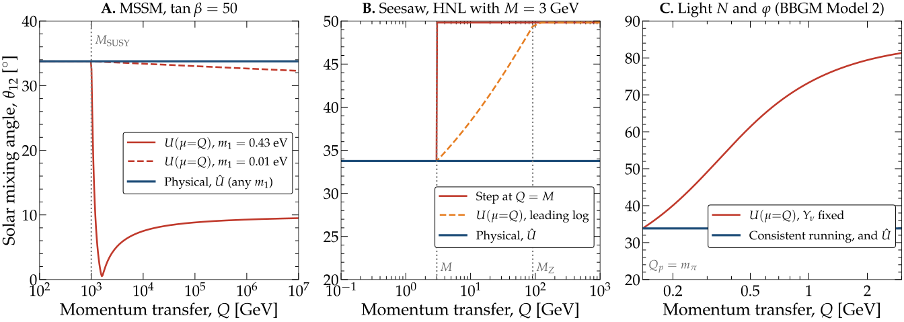
图注：探测时的混合随动量转移变化：被检验的前提与物理结果比较。图示探测过程在动量转移Q下按该前提得到的太阳混合角θ₁₂，以及物理混合角。A：MSSM取tanβ=50、超对称质量1 TeV，Majorana相位为零，按式2运行Weinberg算符；比较轻中微子质量m₁=0.43 eV（参考文献45的取值）与0.01 eV。B：质量3 GeV、耦合于μ味中微子的重中性轻子seesaw模型，采用表4基准B，比较文献34假设在Q=M处的阶跃与领先对数精度的U(μ=Q)。C：文献28的模型2，使用该文为模型1定义的BP2参数；比较固定Dirac Yukawa矩阵Yν的运行与所有耦合自洽运行。本文得到的物理混合在各例中均不依赖Q。
怎么看这张图：彩色尺度运行量与物理可观测量不是同一个对象。图中结论针对被比较的混合角使用方式，并不排除其他新物理顶角效应。 三个具体模型对照共同的尺度混淆。
来源与置信度：arXiv HTML；source verified；https://arxiv.org/html/2610.28744v1/fig_running_examples.svg
图7
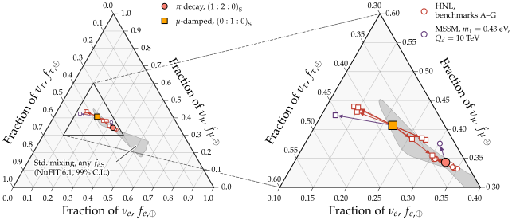
图注：到达地球的高能天体中微子味组成。物理预言使用物理混合矩阵及NuFIT 6.1正常质量排序的最佳拟合参数，考虑完整π衰变源（1∶2∶0）和μ子在衰变前损失能量的π衰变源（0∶1∶0）；这些预言适用于任意动量转移。标准混合区域覆盖源端τ味比例为零的所有组成，并允许混合参数在99%置信范围内变化。按被检验的前提，探测动量转移Qd会令U(Qd)替代物理混合矩阵，导致味组成移动：HNL基准A—G通过Q=M处阶跃，MSSM例取m₁=0.43 eV并运行到Qd=10 TeV。作者指出物理混合不随Q改变，因此这些移动不会发生。
怎么看这张图：先看源端假设，再看混合参数区域；带状区域不是任意源组成的全部可能范围，彩色移动也不是观测到的味比变化。 呈现对天体中微子味比解释的影响。
来源与置信度：arXiv HTML；source verified；https://arxiv.org/html/2610.28744v1/fig_flavor_triangle.svg
强相关工作
本文的基础脉络是标准中微子质量与混合重整化：Antusch等关于高尺度到低尺度演化的研究，以及Kniehl、Sirlin和Almasy等关于在壳混合矩阵定义的工作。它们的作用是说明为何匹配及阈值修正不可省略，而非提供新的高能味信号。本文不否认这些工作的RG方程，改变的是对方程解的实验解释。
直接分歧对象是表1列出的产生与探测使用不同跑动矩阵的研究，包括作者参与的早期MSSM及重中性轻子方案、Babu等轻标量模型和若干模型独立参数化。本文逐一指出缺失外腿修正或不一致的参数跑动，并另用NuTeV与NOMAD限值诊断。相关文献的理论前提并不完全相同，读者应循表1和第VI节定位具体模型，不能把某个基准被否定外推为该类粒子不存在。
同一事件 / 同类源线索：
相似工作：
（未提供）
基础理论 / 方法工作：
相反观点 / 张力线索：
相关简报
1. Interpreting the $γ$-ray emission from Westerlund 1: hadronic or leptonic?
- 来源：arXiv / astro-ph.HE
- 链接：https://arxiv.org/abs/2610.28951
- 作者：Ben Li, Pasquale Blasi, Elena Amato
- 公告 / 来源日期：2026-10-22
- 阅读层级：相关简报
- 评分：novelty 7/10，importance 8/10，relevance 10/10，final 9.40/10
- 推荐理由：Westerlund1同时比较谱和形态及eROSITA上限，使强轻子判别明确依赖扩散谱与磁场；紧贴高能粒子源机制。
中文题目：Westerlund 1：联合能谱、形态与X射线上限比较强子和轻子解释
问题、方法与结论：作者假定粒子在星团集体风终止激波加速，数值求解质子、初级和次级电子的输运，再同时比较Fermi-LAT、H.E.S.S.能谱与径向形态及eROSITA上限。Bohm扩散下两种机制都能解释数据；更有环境动机的Kraichnan扩散下，轻子模型因电子损失无法覆盖最高能点，强子模型仍可行。纯强子解释在质子加速效率不超过10%的假设下要求泡内气体密度至少约1.2每立方厘米；轻子解释则要求激波下游磁场不高于数微高斯。
意义与贡献：贡献在于用同一加速和输运框架比较辐射机制，避免只凭能谱或二维气体相关性作判断。HI、CO及复合线推得的气体分量支持足够靶物质的可能性，但视线积分密度不等于粒子实际照亮的三维密度，尚不能宣布已确认强子起源。
可借鉴之处：可借鉴能谱、经点扩散函数卷积的形态和同步辐射上限同时约束的方法。初级电子集中在高磁场激波附近，次级电子遍布泡内，因此相近的伽马贡献并不意味着相近的X射线贡献；这一空间区分适合星团多波段建模。
局限与关注点：文中KM3NeT十年约3.8σ是简化信号数除背景平方根的预测，不是探测；其全味通量与径迹有效面积口径需要进一步核对。球对称、稳态、气体均匀及预设扩散律也限制了结论，优先关注分能段形态和更深X射线数据。
图3
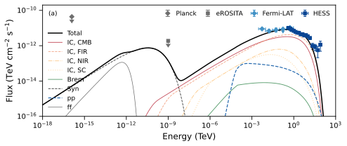
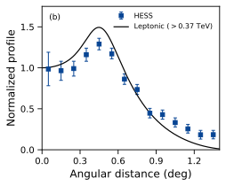
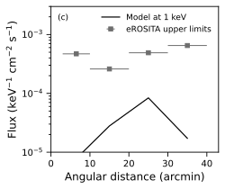
图注：与图2相同，但采用Kraichnan扩散。补全所引用图2的面板说明：这是轻子模型；a为能谱能量分布，暖色曲线为不同光子场的逆康普顿辐射，绿色实线、灰色实线、黑色虚线分别为轫致、自由—自由和同步辐射，蓝色虚线为强子伽马辐射。浅蓝菱形和深蓝方块是Fermi-LAT与HESS数据，灰色菱形和方块是Planck与eROSITA上限。b为按中心值归一的轻子伽马射线强度分布。c为预言的1 keV X射线流量空间分布。
怎么看这张图：本图与图5成对看：在所设参数下，轻子模型不能同时匹配谱和空间分布。不要把该失败推广成排除一切轻子机制。 用于比较相同扩散处方下的辐射解释。
来源与置信度：arXiv HTML；source verified；https://arxiv.org/html/2610.28951v1/x4.svg；https://arxiv.org/html/2610.28951v1/x5.svg；https://arxiv.org/html/2610.28951v1/x6.svg
图5
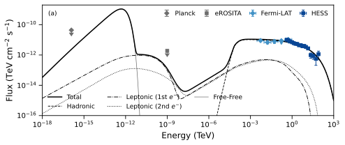
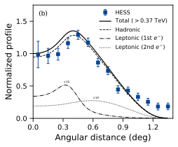
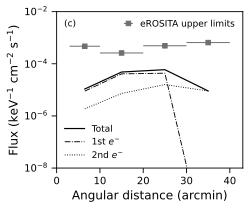
图注：与图4相同，但采用Kraichnan扩散。补全所引用图4的面板说明：这是强子模型；a为能谱能量分布，黑色虚线为强子伽马辐射，点划线与点线分别为初级和次级电子的总辐射。b为按中心值归一的轻子与强子伽马射线强度之和，初级、次级电子分量为便于辨认乘了数值放大因子。c的实线为初级和次级电子预言的X射线流量之和。
怎么看这张图：谱、伽马形态和X射线上限共同限制模型；放大的电子形态线不可直接当成实际占比。环境密度与加速效率仍然退化。 给出强子模型的多波段一致性检验。
来源与置信度：arXiv HTML；source verified；https://arxiv.org/html/2610.28951v1/x9.svg；https://arxiv.org/html/2610.28951v1/x10.svg；https://arxiv.org/html/2610.28951v1/x11.svg
2. Investigating a TeV-Halo Candidate around PSR J1928+1746 with HAWC
- 来源：arXiv / astro-ph.HE
- 链接：https://arxiv.org/abs/2610.29127
- 作者：HAWC Collaboration, R. Alfaro, C. Alvarez, A. Andrés, E. Anita-Rangel, M. Araya, J. C. Arteaga-Velázquez, D. Avila Rojas
- 公告 / 来源日期：2026-10-22
- 阅读层级：相关简报
- 评分：novelty 7/10，importance 8/10，relevance 10/10，final 9.40/10
- 推荐理由：2904日HAWC多成分分离J1928扩展源至百TeV并约束抑制扩散，关联和强子备选仍未排除，是有用的新约束。
中文题目：HAWC分离PSR J1928+1746附近紧致TeV成分，慢扩散解释仍有条件
问题、方法与结论：利用2904天数据，作者以六个源成分加HERMES银河弥散模板拟合拥挤天区，得到靠近脉冲星的HAWC J1928+1750：高斯宽度0.19±0.02度（统计）、系统误差约0.01度，能谱从约2 TeV延伸至100 TeV以上并呈曲率。在磁场固定8微高斯、扩散能量指数固定三分之一的晕模板下，100 TeV电子扩散系数约为2.1×10²⁷平方厘米每秒，较典型星际参考值低约500倍。这个比值是条件推断，不是无模型的扩散测量。
意义与贡献：新分解将先前宽广辐射重新分配给邻源与弥散成分，使脉冲星周围的内区更明确。位置和尺度对所做系统检查较稳健，但放开弥散归一化可使源通量升高约35%；更大半径的亮度不能全部算作晕。
可借鉴之处：可借鉴先做全区计数似然，再比较源残差和完整多源模型中的扩散模板，并用邻近G54.1+0.3紧致源与H.E.S.S.交叉核验。较宽的LAT成分未被强行拼入紧致TeV源的能谱，这是跨仪器联合分析的重要约束。
局限与关注点：TeV数据的单区轻子与强子模型BIC仅差约0.6，不能据此判定机制。电子能量需求低于特征自转供能的约1%支持可行性，但局地磁场未实测，缺清晰X射线对应体，邻近气体和潜在加速器关联也未确立，仍应称TeV晕或演化PWN候选。
图5
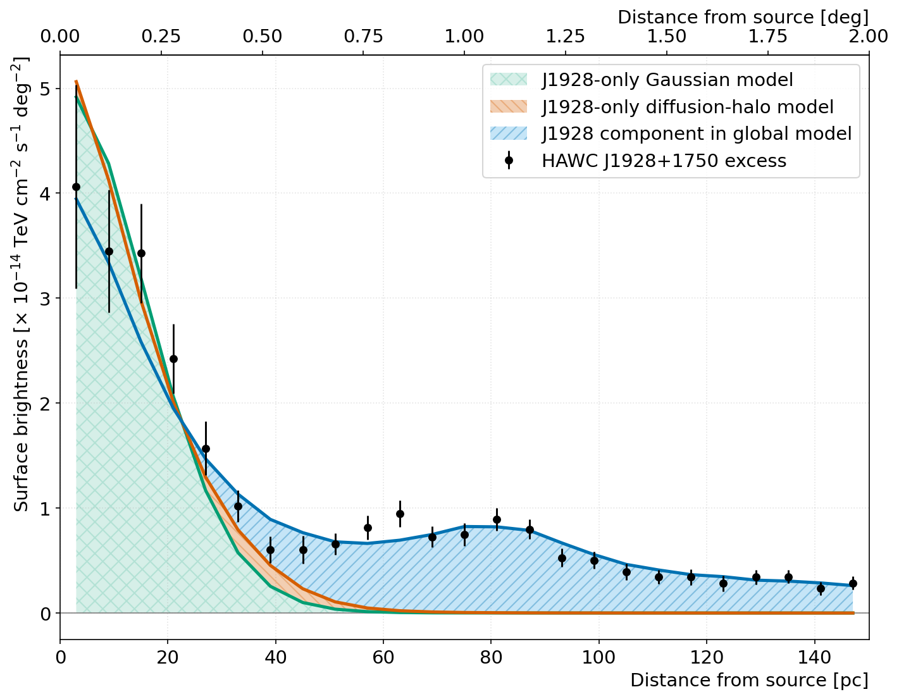
图注：以PSR J1928+1746为中心的HAWC J1928+1750表面亮度轮廓。黑点为同心环带内实测超出背景的信号；绿色、橙色色带分别是高斯模型和扩散晕模板对HAWC J1928+1750单个源的预期。蓝色带是全局模型中的HAWC J1928+1750分量，并非所有模型分量之和。各色带表示模型贡献，不是误差带。下轴按所采用的脉冲星距离换算为投影距离，上轴为对应角距离。内侧由该源主导，外侧受邻近TeV分量和银道面辐射影响。
怎么看这张图：内侧轮廓支持扩展辐射，但外侧偏离不能全部归为扩散晕；扩散系数仍依赖磁场和冷却假设。 展示形态证据及邻源污染边界。
来源与置信度：arXiv HTML；source verified；https://arxiv.org/html/2610.29127v1/SB.png
3. Searches for coincident Gravitational Waves and High-Energy Neutrinos from the KM3NeT and ANTARES telescopes during O3
- 来源：arXiv / astro-ph.HE
- 链接：https://arxiv.org/abs/2610.29436
- 作者：ANTARES Collaboration, KM3NeT Collaboration, O. Adriani, A. Albert, A. R. Alhebsi, S. Alshalloudi, S. Alves, M. E. S. Alves
- 公告 / 来源日期：2026-10-22
- 阅读层级：相关简报
- 评分：novelty 7/10，importance 8/10，relevance 10/10，final 9.40/10
- 推荐理由：O3 GW与ANTARES/ORCA触发及亚阈值联合未检出给联合源率上限，统计和能量假设直接关联多信使搜寻。
中文题目：O3引力波与ANTARES、ORCA6联合搜索未见显著关联
问题、方法与结论：研究开展两条互补搜索：四个ANTARES高信号性中微子触发±500秒的非模板引力波搜索；另一条放宽中微子筛选，与PyCBC亚阈值触发按时间、天空重叠及单仪器证据排序，分别测试±30秒和±500秒。ORCA6没有达到第一条门槛的触发，仅参与第二条。所有关联均不显著，最高逆假警报率仅0.8年。在引力波能量0.1太阳质量乘光速平方、中微子各向同性等效能量10⁵¹ erg等假设下，联合源率90%上限约880每立方吉秒差距每年，比所比较旧结果改善约七倍。
意义与贡献：结果展示亚阈值信息可降低对极高单事件中微子能量的依赖，并将未探测转成群体约束。但上限仍高于所引用的双中子星预期率，不能解释为已排除一般并合中微子模型，也没有发现新的共同源。
可借鉴之处：可借鉴用时间平移建立经验背景、随地球自转更新天空位置，以及用注入检查定位误差和瞬态噪声造成的效率损失。约90%的注入回收率以触发已生成且中微子重建较好为条件，不是对所有物理源的端到端效率。
局限与关注点：率上限依赖喷流束射因子10、假设能谱、辐射能量、有效观测时间及探测模拟。ANTARES和ORCA6事件排序分别进行，群体探测概率才组合；不得把局部候选或IFAR门槛换算成未经试验校正的发现显著性。
图9
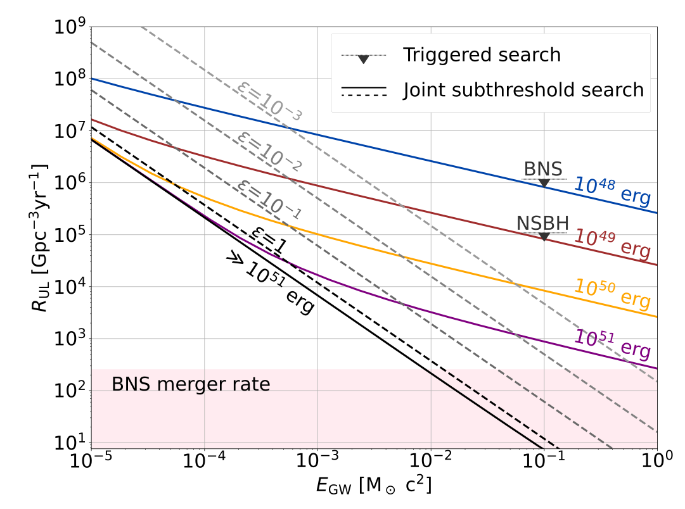
图注：引力波—高能中微子源的事件率密度上限随引力波辐射能量变化。彩色实线对应不同中微子各向同性等效能量，黑到灰色虚线对应不同的中微子/引力波能量比ε。结果同时使用ANTARES与ORCA6搜索；三角形为触发搜索，曲线为阈下搜索。粉色区域为比较用的本地双中子星并合率。触发搜索中使ANTARES预期探测一个中微子所需的各向同性等效能量，双中子星约2.5×10⁵⁴ erg，中子星—黑洞约1.2×10⁵⁵ erg。
怎么看这张图：横轴、曲线族和束流修正假设共同决定上限，不能挑最低数字当成所有并合源的统一约束；本次没有显著联合事件。 集中展示未检出产生的条件性种群约束。
来源与置信度：arXiv HTML；source verified；https://arxiv.org/html/2610.29436v1/population.svg
4. A Comprehensive X-ray Characterization of the Pulsar Wind Nebula CTB 87: Evidence for Reverse-Shock Interaction from Its X-ray and Broadband Emissions
- 来源：arXiv / astro-ph.HE
- 链接：https://arxiv.org/abs/2610.28781
- 作者：Jaegeun Park, Jason Alford, Hongjun An, Joseph D. Gelfand, Chanho Kim, Kaya Mori, Samar Safi-Harb
- 公告 / 来源日期：2026-10-22
- 阅读层级：相关简报
- 评分：novelty 7/10，importance 8/10，relevance 9/10，final 9.05/10
- 推荐理由：NuSTAR联合软X射线检出CTB87谱弯曲，单区及多区模型无法兼顾谱与空间，新增电子成分仍属解释而非直接测量。
中文题目：CTB 87约5 keV谱弯曲使单一电子群解释面临更严格检验
问题、方法与结论：作者联合新NuSTAR和存档Chandra、XMM-Newton数据，控制脉冲星污染、背景及跨仪器归一化，发现CTB 87的0.5—20 keV谱不能由简单幂律充分描述。折断幂律给出折断能5.12±0.26 keV、两侧光子指数1.89±0.05和2.73±0.10；截断幂律也可接受。XMM径向指数软化且高能图像尺度较小，支持电子输运中的同步冷却。演化单区模型能覆盖宽带总体，却不能同时再现窄X射线谱和0.1—1 TeV结构；优先拟合X射线的多区模型仍缺少亚TeV通量。
意义与贡献：硬X射线把最高能电子的分布限制得更窄，使过去只凭软X射线幂律建立的宽带解释受到检验。它提示时间演化与空间输运必须一起处理，但额外冷却电子群、反向激波压缩或磁重联只是候选解释，尚非直接观测结论。
可借鉴之处：可借鉴先以高空间分辨率分离脉冲星，再联合不同仪器的谱曲率、径向亮度和光子指数约束输运的方法。作者优先使用空间对应更好的VERITAS数据，并说明HAWC通量不宜无条件混用；不同能段的源定义应先核验。
局限与关注点：多区参数由目视调整且强烈协变，固定年龄和磁场演化假设限制解释；亚TeV隆起的统计证据仍有限。NuSTAR未检出显著X射线脉冲，GeV脉冲贡献也只是模型候选。后续需要更深甚高能数据和脉冲搜索，不能把模型残差直接当作第二粒子群的发现。
图7
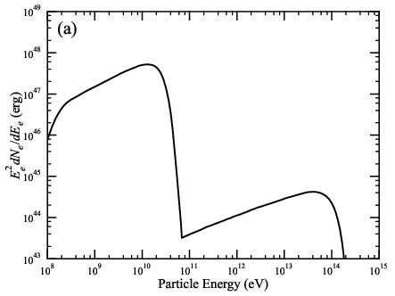
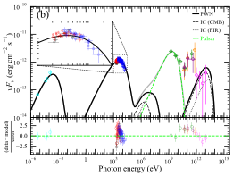
图注：多区模型结果。a为模型采用的空间积分电子分布；b为得到的能谱能量分布，黑色实线表示总模型，下方展示拟合残差。绿线表示J2016可能的伽马射线辐射，采用4FGL脉冲星的平均谱参数并按观测流量归一。宇宙微波背景与远红外种子光子的独立逆康普顿分量分别用虚线和点线表示。
怎么看这张图：关注X射线窄弯折与宽频谱能否同时解释；绿线是候选脉冲星成分，不是独立检出。多区参数为目视调节，残差图不能替代后验误差。 呈现输运模型的成功范围与剩余成分。
来源与置信度：arXiv HTML；source verified；https://arxiv.org/html/2610.28781v1/fig7a.png；https://arxiv.org/html/2610.28781v1/fig7b.svg
5. Cosmic Ray Observations using Coincident Scintillator and Radio Signals with the Beamforming Elevated Array for COsmic Neutrinos (BEACON)
- 来源：arXiv / astro-ph.HE
- 链接：https://arxiv.org/abs/2610.29923
- 作者：Zachary Martin, Jackson Hinkel, Kira Perna, Andrew Zeolla, Jaime Alvarez-Muñiz, Sergio Cabana-Freire, Washington Carvalho Jr., Austin Cummings
- 公告 / 来源日期：2026-10-22
- 阅读层级：相关简报
- 评分：novelty 7/10，importance 7/10，relevance 10/10，final 9.05/10
- 推荐理由：BEACON闪烁体-射电符合22个候选和0.11背景估计，验证山顶阵列关键能力；率仅数量级一致，非中微子探测。
中文题目：BEACON用闪烁体符合验证22个射电宇宙线候选事件
问题、方法与结论：BEACON山顶原型升级为六个双偏振天线和四块闪烁体后，在约83天、2500万次闪烁体符合触发中，按射电脉冲性、信噪比、干扰空间分布、两系统方向一致性及闪烁体饱和条件筛出22个宇宙线候选。十万组随机配对的射电—闪烁体合成数据给出偶然背景均值0.11个。重建偏振比一般射电干扰样本更接近地磁辐射预期；模拟约每日1个、实测约每日0.3个，属于量级一致而非精密接受度验证。
意义与贡献：独立粒子探测通道为强人为干扰环境中的射电事件提供交叉验证，是未来地球掠射τ中微子阵列的仪器证据。本样本为向下宇宙线簇射，既不是中微子探测，也没有验证完整规模阵列的中微子灵敏度。
可借鉴之处：随机错配保留各通道实测分布，再应用同样筛选估计偶然符合；分时段聚类处理变化的射电干扰，另查飞机航迹。偏振未作为选样切割，留作独立一致性诊断，减少用同一特征选择后再宣称验证的循环。
局限与关注点：数据采用闪烁体触发，并非本次实现的射电波束形成触发；饱和切割和天线响应使模拟率有明显不确定性。小阵列不能可靠恢复横向簇射分布、初级能量或最大深度；偏振也无法独自区分最像宇宙线的背景类，仍需更稀疏的外围天线和响应标定。
图19
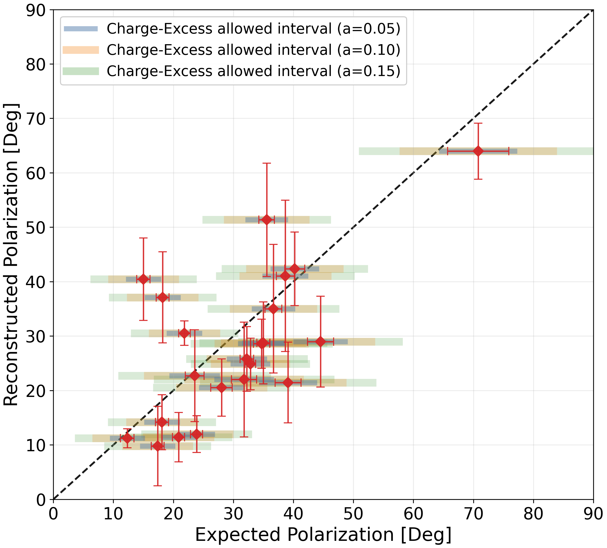
图注：22个宇宙线候选事件重建的无符号主偏振角，相关误差详见第6.3节。水平条表示电荷过剩对电场的贡献可使预期偏振角相对纯地磁值偏离的区间；采用经簇射方向与地磁场夹角sinα修正的振幅因子a=0.05、0.10、0.15，定义见式26。
怎么看这张图：水平区间是不同电荷过剩假设的预期移动，不是角度测量误差。方向与偏振的联合一致性支持宇宙线识别，但某些背景假设的比较量也相近。 独立于触发阈值的物理一致性证据。
来源与置信度：arXiv HTML；source verified；https://arxiv.org/html/2610.29923v1/polarization.png
6. Domain models of turbulent magnetic fields and the spectral shape of ensemble averaged axion-photon conversion
- 来源：arXiv / astro-ph.HE
- 链接：https://arxiv.org/abs/2610.29541
- 作者：Oleksandr Khasai, Lidiia Zadorozhna, Denys Malyshev, Oleg Ruchayskiy
- 公告 / 来源日期：2026-10-22
- 阅读层级：相关简报
- 评分：novelty 7/10，importance 7/10，relevance 9/10，final 8.70/10
- 推荐理由：给出轴子光子集合平均谱解析形状及湍流域长指数映射，指出锐边域模型的伪谱斜率，方法约束可迁移至伽马传播。
中文题目：ALP星系团传播：磁畴长度分布如何匹配真实湍流谱
问题、方法与结论：光子与类轴子粒子在磁场中转换，使不同视线呈随机谱调制。作者在弱转换、统计均匀场和长传播路径条件下，以横向磁场两点相关函数推导系综平均信号，并匹配连续湍流与独立均匀磁畴模型。湍流能量谱指数为a且位于1至2之间时，磁畴长度概率指数应为β=3−a；Kolmogorov对应4/3，而非曾使用的1/3。β小于1时，磁畴尖锐边界强制产生波数负二次方尾部，无法复现Kolmogorov惯性区。
意义与贡献：这把传播代码中的经验输入与可观测湍流统计联系起来，可用于复核AGN叠加搜索的谱形假设。匹配的是平均信号的惯性区，不保证整段能谱、单条视线涨落或已发表耦合上限自动保持一致；本文没有给出新的数据限值。
可借鉴之处：推导中随机位置落入磁畴的概率需按长度加权，说明不能直接将湍流能量谱换元当成磁畴数目分布。有限最小/最大尺度比时应使用精确变换；常见2/34尺度比下，宽尺度极限在起始区可偏差10%—15%。
局限与关注点：高能平台还依赖外尺度处理，匹配惯性区后仍有量级为一的归一化差异。真实星系团的径向密度、磁场变化、相邻视线相关和四点函数控制的样本方差未完整解决，强混合或共振区也不能直接使用本文微扰公式。
图4
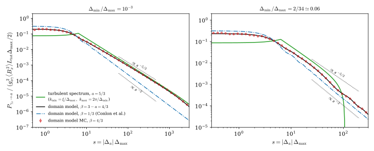
图注：系综平均转换概率随s=|Δa|Δmax变化，概率单位为g²aγ〈Bx²〉LtotΔmax/2。左图磁畴尺度跨度ρ=Δmin/Δmax=10⁻³，右图取Malyshev等（2025b）采用的ρ=2/34≈0.06。绿色是Kolmogorov谱a=5/3的湍流场，kmax=2π/Δmin，kmin由式32的振幅匹配确定。黑线为β=3−a=4/3的磁畴模型；红圈是同一模型300个±Bx,rms实现的直接蒙特卡洛结果，按对数分箱，误差棒为均值标准误。蓝色点划线是Conlon等（2017）的β=1/3处方，其尾部按s⁻²下降；点状引导线标示两种斜率。绿线在s≈2π处的尖峰、小s处较低的平台及右图s≈107处的下降，都源于式25的尖锐截断，详见第4和5.2节。
怎么看这张图：匹配惯性区斜率与振幅后，低频平台仍不相同；绿色尖峰是谱截断效应，不能解释为可直接观测的粒子共振。 验证新指数映射并显示不能等同的区间。
来源与置信度：arXiv HTML；source verified；https://arxiv.org/html/2610.29541v1/fig_slopes.svg
7. NGC 3227 Blinks: An Extreme Changing-Look Event in a Seyfert Galaxy
- 来源：arXiv / astro-ph.HE
- 链接：https://arxiv.org/abs/2610.29137
- 作者：Kaiwen Zhang, Michael S. Brotherton, Pu Du, Dong-Wei Bao, Bi-Xuan Zhao, Feng-na Fang, Yan-Rong Li, Chen Hu
- 公告 / 来源日期：2026-10-22
- 阅读层级：相关简报
- 评分：novelty 7/10，importance 8/10，relevance 8/10，final 8.70/10
- 推荐理由：NGC3227快变脸同时保留混响与X射线硬化，限制遮挡位置和柱密度，模型与随机变率比较需区分证据强度。
中文题目：NGC 3227的短时变暗：宽线回响支持盘风遮挡，但遮挡体性质仍依赖模型
问题、方法与结论：NGC 3227在2019年末的5100 Å连续谱下降约70%，宽Hβ线下降约80%，随后恢复。作者把WIRO光谱监测、ZTF测光和Swift X射线资料结合，比较变暗阶段与普通阶段的连续谱—宽线时延。交叉相关给出变暗阶段约6.1天、普通阶段约5.0天的时延；独立光变重建也得到数天回响，支持宽线区响应其内部光源的变化。作者进一步用Cloudy光致电离模型构造靠近中心的高度电离遮挡云，以电子散射衰减解释光学变暗。
意义与贡献：关键证据是连续谱和宽线仍按光行时先后变化，而不只是同时变暗。这使宽线区以内的遮挡成为可检验解释。模型要求约0.1—0.2光日处、柱密度约1.5×10²⁴ cm⁻²的气体；这些是特定电离和几何条件下的推断，不能当成直接测量的盘风位置与质量。
可借鉴之处：可借鉴的是将时延检验与变源自身的历史行为分开标定：作者用五季监测建立阻尼随机游走模型，十万条模拟中出现类似快速大幅变暗的比例约0.2%；另用零时延注入测试得到约6.8×10⁻⁵的尾概率。两者分别检验指定随机过程和指定回响模型，不应合并成遮挡机制的发现显著性。
局限与关注点：Swift观测没有覆盖光学最暗时刻，先前X射线硬化不能证明由同一遮挡体造成；X射线估计柱密度也低于光学模型。历史随机游走检验不能排除所有非平稳吸积变化。下一步需要同步X射线、光学和速度分辨宽线回响，检验散射遮挡、内禀变化及盘风几何之间的退化。
图3
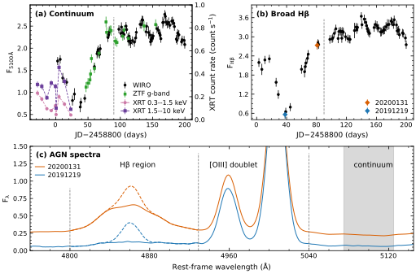
图注：NGC 3227的光学连续谱、Swift/XRT及宽Hβ变化。a为静止系5100 Å活动星系核连续谱光变，单位10⁻¹⁴ erg cm⁻² s⁻¹ Å⁻¹；黑点为WIRO，绿点为交叉标定到同一流量尺度的ZTF g带测光。粉色、紫色点分别为Swift/XRT的0.3—1.5与1.5—10 keV计数率，来自Mao等，使用右轴count s⁻¹，虚线连接相邻历元。90天处竖虚线标示遮挡阶段与后续正常阶段的分界。b为WIRO宽Hβ光变，单位10⁻¹² erg cm⁻² s⁻¹，彩色点对应c中同色光谱。c为2019年12月19日低态（蓝）和2020年1月31日高态（橙）的内禀光谱，单位10⁻¹⁴ erg cm⁻² s⁻¹ Å⁻¹，展示Hβ和[O III]双线；虚线曲线为窄Hβ，实线为扣除窄Hβ后的谱。竖虚线标示各线区间边界，灰色阴影标示对应历元的5100 Å连续谱流量。
怎么看这张图：先看光学与宽线共同下降，再注意X射线覆盖在光学最低点前已结束，因此本图无法确认同一遮挡云同时造成两者变化。 展示多波段证据和关键覆盖缺口。
来源与置信度：arXiv HTML；source verified；https://arxiv.org/html/2610.29137v1/light_curve_spec_1.svg
8. PBR sensitivity to boosted dark matter explanation for the KM3-230213A event
- 来源：arXiv / astro-ph.HE
- 链接：https://arxiv.org/abs/2610.29942
- 作者：M. H. Reno, T. Venters, M. Abrate, J. Adams, J. Alfaro, D. Allard, P. Alldredge, R. Aloisio
- 公告 / 来源日期：2026-10-22
- 阅读层级：相关简报
- 评分：novelty 6/10，importance 7/10，relevance 9/10，final 8.40/10
- 推荐理由：以KM3事件归一的特定加速暗物质模型估计PBR灵敏度，属条件性仪器预期，不是暗物质证据。
中文题目：用PBR气球寻找向上空气簇射：对一种高能暗物质解释的条件性灵敏度预测
问题、方法与结论：作者研究计划中的PBR气球切伦科夫相机能否检验一种高能暗物质模型：入射暗粒子在地球中非弹性散射，产生长寿命中间态，再衰变为μ或τ轻子；逃出地面的轻子形成向上空气簇射。计算结合地球密度、粒子传播、衰变位置和相机可见区域，分别评估1000秒理想瞬变与20天航迹。其基准设置为33公里高度、200光子每平方米的触发阈值，并把KM3NeT事件对应的模型流量作为比较尺度。
意义与贡献：工作把地球内部传播、衰变长度和真实观测几何连到一个可观测量，指出气球平台可以检验与中微子望远镜不同的出射轻子通道。但本文给出的是零背景、零事件下以2.44个期望事件定义的90%置信灵敏度，并非探测结果或5σ发现阈值；KM3NeT事件也并未因此被识别为暗物质。
可借鉴之处：最有用的是区分瞬变的最佳指向和实际源位置，并显示截面与衰变长度如何同时影响地球透明度和有效面积。模型比较取μ、τ分支比相等，暗粒子能量为单个末态轻子能量的四倍；引用灵敏度时必须保留这些约定，不能直接移用普通中微子的有效面积。
局限与关注点：主要结果采用无云条件；全部被2公里厚不透明云覆盖的示例会提高阈值、降低接受度，但并不是真实天气预报。常数相干散射截面、连续τ能损及单事件反推流量均带模型依赖，射电分系统尚未计入灵敏度。应优先核验仪器阈值、云层和背景，才讨论对具体粒子模型的排除能力。
图7
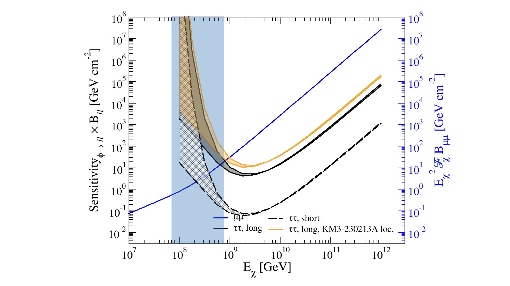
图注：PBR预期灵敏度乘以τ对分支比Bττ后随暗粒子能量Eχ变化，针对暗粒子在地球中经中间态衰变为τ并产生的空气簇射，与参考文献31的μ通道相对应。黑、橙色带的上下边界覆盖σ₀=10⁻³³—10⁻³² cm²的取值范围。黑线及其色带为天空最佳源位置可达到的灵敏度，橙线及其色带为KM3-230213A的标称天区位置。实线为持续整个20天飞行的瞬变，虚线为持续1000秒的爆发。蓝色实线为KM3NeT对μ对的近似灵敏度；蓝色阴影是Eχ=70—760 PeV的范围，假定KM3-230213A事件能量为两个μ子能量之和。
怎么看这张图：这些是特定暗物质链和分支比下的流量灵敏度；最佳指向与指定事件指向不同，不能把蓝带视为暗物质的观测确认。 呈现两个平台的条件性可比范围。
来源与置信度：arXiv HTML；source verified；https://arxiv.org/html/2610.29942v1/simulated_flight_launch_2028_Apr_25_sensitivities_w_FH_model_B_tautau_1_0.png
9. A Unified Model for the Gravitational Wave Background and Quasar Luminosity Functions
- 来源：arXiv / astro-ph.HE
- 链接：https://arxiv.org/abs/2610.28680
- 作者：Cayenne Matt, Kayhan Gültekin, Ryan Hickox
- 公告 / 来源日期：2026-10-22
- 阅读层级：相关简报
- 评分：novelty 7/10，importance 7/10，relevance 8/10，final 8.35/10
- 推荐理由：将PTA质量函数与类星体光度函数联结，降低所需爱丁顿比；依赖质量函数和分布参数化，尚非独立验证黑洞增长史。
中文题目：引力波背景偏好的大质量黑洞种群，能否同时解释类星体光度函数？
问题、方法与结论：纳赫兹引力波背景若主要来自超大质量双黑洞，其幅度可约束大质量黑洞种群。作者将一种经NANOGrav背景校准的黑洞质量函数，与传统星系—黑洞关系给出的基线比较，再分别卷积双幂律爱丁顿比分布，拟合红移0.2—6.2的类星体总辐射光度函数。较多的大质量黑洞允许以较低的相对吸积光度解释明亮类星体，在所用模型内不必大量诉诸超爱丁顿吸积。
意义与贡献：价值在于要求同一种群同时满足引力波与电磁统计，而不单独调高双黑洞质量来匹配背景。拟合偏好并不独立证明早期黑洞种子更重，也没有直接重建单个黑洞的生长历史；结论继承背景由双黑洞主导及其并合、质量标定等假设。
可借鉴之处：作者在各红移独立拟合爱丁顿比双幂律的两侧斜率、转折和归一化，并检验限制在爱丁顿光度以下的变体。这种前向卷积可把“质量更多”与“吸积更亮”之间的退化显式展开。归一化受最低爱丁顿比和质量范围影响，不能直接叫作观测到的活动星系比例。
局限与关注点：表中误差仅传播光度函数数据，未包含输入黑洞质量函数的不确定性；高红移数据稀少，部分参数依赖先验。今天另一篇PTA论文还显示背景幅度会受脉冲星噪声先验影响，因此这里的种群推断也需要传播这类上游不确定性。下一步应统一分布测度、选样及输入误差，做联合层级推断后再比较生长情景。
图4
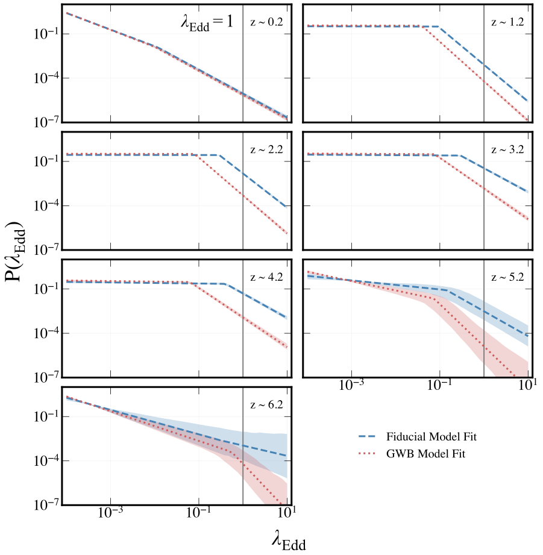
图注：基准模型与引力波背景校准模型的爱丁顿比分布，红移与图3相同。每个面板的竖线标示爱丁顿极限。对所有z>0.2的面板，引力波背景模型的转折位于比基准模型更低的爱丁顿比；最高红移处其高爱丁顿比端斜率也更陡。两个模型的转折均随红移升高而增大，在约1.2≤z≤4.2范围内，低爱丁顿比端斜率明显变平。
怎么看这张图：更大黑洞可在较低相对吸积率下产生相同光度，这是模型间的条件性比较。输入质量函数误差未完全传播，不能将曲线差异当成独立的种群发现。 直观展示质量与吸积率之间的退化。
来源与置信度：arXiv HTML；source verified；https://arxiv.org/html/2610.28680v1/erdf_fits_big_z_grid.svg
10. Can we constrain the binary neutron star merger time from kilonova light curves?
- 来源：arXiv / astro-ph.HE
- 链接：https://arxiv.org/abs/2610.28775
- 作者：Noah Jamsin, Marion Pillas, Marko Ristić, Laurence E. H. Datrier, Daniel Brethauer, Stefano Ascenzi, Mattia Bulla, Barbara Patricelli
- 公告 / 来源日期：2026-10-22
- 阅读层级：相关简报
- 评分：novelty 7/10，importance 7/10，relevance 8/10，final 8.35/10
- 推荐理由：真实/模拟千新星曲线系统量化合并时刻恢复与上限价值，明确天区和时间联合关联的适用边界。
中文题目：从千新星光变回推并合时刻：早期多色观测与未检出上限比单纯增加测点更关键
问题、方法与结论：没有同步引力波触发时，千新星首次被看见并不等于双中子星刚刚并合。作者让并合时刻成为光变拟合参数，使用多套辐射输运模型与推断框架，比较25条模拟光变、Rubin深钻场采样、AT2017gfo及四个伽马暴千新星候选。在同模型注入与恢复的深钻场实验中，90%后验区间宽度的中位数约5.49天；跨模型恢复增至5.90—6.17天。最有利的早期多色采样可压缩至不到一天。
意义与贡献：这一结果把后续引力波定向搜索的时间窗与实际光度数据连接起来。约5.5天不是对所有Rubin事件的性能保证：样本仅25条、采用深钻场策略，非全巡天选择函数。所谓精度是后验区间宽度，也不等于偏差、频率学覆盖率或关联发现显著性。
可借鉴之处：最实用的策略是保留首次发现以前的未检出记录，并迅速取得至少两个滤光片的颜色演化。在模拟中额外加入并合前三小时的两个波段上限，可平均缩窄后验约60%；这是人为设置的有利上限，不能假定每个事件都会获得。固定距离的收益通常小于补足早期光变信息。
局限与关注点：真实AT2017gfo在不同不透明度、热化与代理模型下出现时间偏移；缩小系统误差会使后验更尖，却可能偏离已知并合时刻。自由中子早期辐射测试还受时间分辨率、先验边界及排除0.2天内数据影响。应以跨模型恢复和真实事件覆盖检验校准搜索窗，不能用最窄后验替代可靠定时。
图3
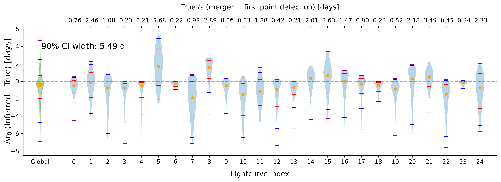
图注：采用Bu2026_MLP、在现实LSST采样配置下得到的并合时刻t₀偏移后验小提琴图。上方横轴给出首次探测与真实并合时刻的时间差。橙色点是分布中位数；各小提琴中的红、蓝、紫色线分别标示1σ、2σ、3σ可信区间。红色点线标示真实值，绿色小提琴是边缘化汇总分布。各列下方标注90%可信区间宽度的中位数。
怎么看这张图：逐事件后验宽度差异很大；绿色是各光变后验的汇总，不能当作把全部事件联合拟合得到的单个并合时刻。本图是深钻场模拟。 展示定时精度分布而非只报最好案例。
来源与置信度：arXiv HTML；source verified；https://arxiv.org/html/2610.28775v1/plot/violin/bu26.png
11. Double-Shock Radiation in Supernova Wind Breakout and EP260321a
- 来源：arXiv / astro-ph.HE
- 链接：https://arxiv.org/abs/2610.29226
- 作者：Zhuo Li, Rui-Ze Shi, Qiang Wang
- 公告 / 来源日期：2026-10-22
- 阅读层级：相关简报
- 评分：novelty 7/10，importance 7/10，relevance 8/10，final 8.35/10
- 推荐理由：双激波模型区分热化反向激波与非黑体前向激波，并解释EP260321a的时标；保留简报，明确硬X射线仅为预言及近似边界。
中文题目：EP260321a的软X射线来自反向激波？双激波模型给出可检验的硬X射线伴随预言
问题、方法与结论：超新星抛射物撞上致密星风时，同时产生扫过星风的前向激波和穿入抛射物的反向激波。作者在辐射主导、薄壳近似下推导两者速度及内能关系：反向激波更慢，更容易建立局部热平衡，因而可能产生软X射线黑体，而更快的前向激波可产生更强的非黑体成分。对EP260321a/SN2026gzf，模型以约0.13 keV软成分约束局限于约10¹³厘米内的10⁻⁴太阳质量星风，并用更外层散射壳展宽光变。
意义与贡献：这为“软、近黑体的激波突破为何伴随较快抛射物”提供一个具体分工机制。示例还用碳氧包层冷却解释前30千秒光学辐射，但需要将爆炸时刻比首次X射线到达提前约2400秒。该时移是传播几何假设下的模型参数，非独立测得的爆炸时刻。
可借鉴之处：方法价值是拆开内禀发射、外部散射与包层冷却三个时标。作者用蒙特卡洛传播比较光学深度1.5—3、不同厚度的壳层，解释约700秒上升及更长衰减；同时预言前向激波可在10 keV以上释放更多能量。未来软硬X射线同步覆盖能直接检验这个双成分图像。
局限与关注点：文中光变比较主要展示示例，未给出完整后验或替代机制的统计优劣。解析动力学采用非相对论跃迁条件，应用到约0.5c前向激波时需检查修正；忽略部分绝热冷却，且尚未自洽解释观测温度演化。更强的硬X射线是模型预言，不能写成已有伴随探测。
图2
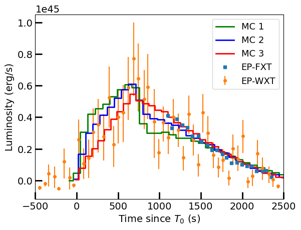
图注：EP260321a的瞬时X射线0.4—2 keV光变。EP-WXT与EP-FXT数据来自参考文献32。曲线为蒙特卡洛模型：绿色MC 1取壳厚4×10¹² cm、光学深度1.5；蓝色MC 2取壳厚2×10¹² cm、光学深度2；红色MC 3取壳厚1.5×10¹² cm、光学深度3。其他模拟参数见正文。
怎么看这张图：多组壳厚与光学深度都能产生快升慢降，说明形态可行而非参数唯一。该图没有给出模型选择显著性或完整参数区间。 核验外层散射展宽的直接模型比较。
来源与置信度：arXiv HTML；source verified；https://arxiv.org/html/2610.29226v1/X-ray_lc.png
说明
评分由 LLM 给出初评，再由本地阈值策略过滤；IACT、TeV 伽马射线和高能中微子天文学按重点方向处理。